<!doctype html>
<html lang="en">
<head>
  <meta charset="utf-8">
  <meta name="viewport" content="width=device-width, initial-scale=1">
  <title>arxiv digest — 2026-06-23</title>
  <style>
:root {
  --bg: #ffffff;
  --fg: #1f2328;
  --muted: #59636e;
  --border: #d0d7de;
  --card: #f6f8fa;
  --link: #0969da;
}
body {
  max-width: 980px;
  margin: 0 auto;
  padding: 2rem 1rem 5rem;
  font-family: -apple-system, BlinkMacSystemFont, "Segoe UI", Helvetica, Arial, sans-serif;
  line-height: 1.55;
  color: var(--fg);
  background: var(--bg);
}
a { color: var(--link); }
img { max-width: 100%; height: auto; }
pre, code { background: var(--card); border-radius: 6px; }
pre { padding: 1rem; overflow-x: auto; }
blockquote { border-left: 4px solid var(--border); padding-left: 1rem; color: var(--muted); }
details { margin: 0.6rem 0; }
summary { cursor: pointer; font-weight: 600; }
.paper-figures-scroll {
  display: flex;
  gap: 1rem;
  overflow-x: auto;
  overscroll-behavior-x: contain;
  padding: 0.75rem 0.25rem 1rem;
  margin: 1rem 0 1.25rem;
  border-top: 1px solid var(--border);
  border-bottom: 1px solid var(--border);
  scroll-snap-type: x proximity;
}
.paper-figure-card {
  flex: 0 0 min(260px, 72vw);
  scroll-snap-align: start;
  background: var(--card);
  border: 1px solid var(--border);
  border-radius: 12px;
  padding: 0.55rem;
}
.paper-figure-card img {
  display: block;
  width: 100%;
  max-height: 240px;
  object-fit: contain;
  background: white;
  border-radius: 8px;
}
.paper-figure-caption {
  display: block;
  margin-top: 0.5rem;
  color: var(--muted);
  font-size: 0.85rem;
}
.figure-strip-hint {
  color: var(--muted);
  font-size: 0.9rem;
  margin-bottom: -0.3rem;
}
</style>
  <!-- MathJax: renders $...$ inline math and $$...$$ display math, plus
       \(...\) and \[...\]. Loaded from the official CDN; works offline
       once cached. Configured to skip code/pre blocks so arxiv IDs that
       look like dollar amounts don't get mangled. -->
  <script>
    window.MathJax = {
      tex: {
        inlineMath: [['$', '$'], ['\\(', '\\)']],
        displayMath: [['$$', '$$'], ['\\[', '\\]']],
        processEscapes: true,
        processEnvironments: true
      },
      options: {
        skipHtmlTags: ['script', 'noscript', 'style', 'textarea', 'pre', 'code'],
        ignoreHtmlClass: 'tex2jax_ignore',
        processHtmlClass: 'tex2jax_process'
      }
    };
  </script>
  <script id="MathJax-script" async
    src="https://cdn.jsdelivr.net/npm/mathjax@3/es5/tex-chtml.js"></script>
</head>
<body>
<header style="background-color: #333; color: white; padding: 15px; margin-bottom: 20px;">
  <h1 style="margin: 0; font-size: 24px;">
    <a href="https://ochelpan.github.io/arXiv_clean/" style="color: white; text-decoration: none;">Main</a>
  </h1>
</header>

<h1>Daily arXiv Report</h1>

<hr>
<p>
<a href="index.html">← Index</a>
 · <a href="papers_02.html">← Previous</a> · <a href="papers_04.html">Next →</a>
</p>
<hr>

<h2>Papers 41–60</h2>
<p><a id="paper-2606.21835"></a></p>
<h3 id="quantum-memory-in-scalar-induced-gravitational-waves"><a href="http://arxiv.org/abs/2606.21835v1">Quantum Memory in Scalar-Induced Gravitational Waves</a></h3>
<p><strong>Authors:</strong> Waqas Ahmed<br>
<strong>Type:</strong> theory · <strong>Category:</strong> other · <strong>PDF:</strong> <a href="https://arxiv.org/pdf/2606.21835v1">https://arxiv.org/pdf/2606.21835v1</a><br>
<strong>Analysis basis:</strong> full PDF text, analyzed in chunks
<strong>Topic relevance:</strong> 🔥 <code>entanglement &amp; information structure</code> <strong>4/5</strong> · <code>Keldysh / 2PI / non-Gaussian methods</code> <strong>2/5</strong> · <code>correlated / nonlocal dissipation</code> <strong>1/5</strong> · <code>methods for driven-dissipative</code> <strong>1/5</strong> · <code>non-equilibrium dynamics</code> <strong>1/5</strong></p>
<div class="figure-strip-hint">↔ Scroll figures horizontally</div>
<div class="paper-figures-scroll">
<figure class="paper-figure-card">
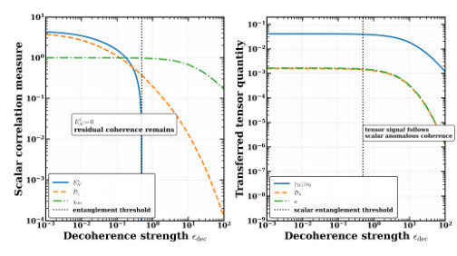
<figcaption class="paper-figure-caption"><b>Fig 1.</b> FIG. 1. Minimal scalar-to-tensor transfer benchmark. Panel (left) shows the scalar logarithmic negativity, Gaussian dis- cord, and anomalous coherence fraction as functions of the decoherence strength. The vertical line marks the point where scalar entanglement vanishes. Panel (right) shows the induced tensor coherence, tensor discord, and connected covariance generated by the same residual scalar anomalous coherence. The tensor quantities remain nonzero inside the scalar separa- ble regime because they are sourced by coherence contractions rather than by scalar entanglement itself.</figcaption>
</figure>
<figure class="paper-figure-card">
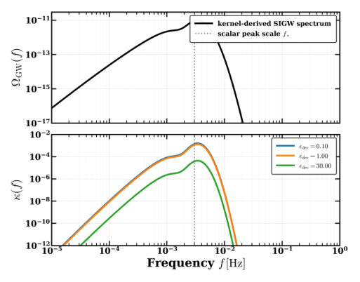
<figcaption class="paper-figure-caption"><b>Fig 2.</b> FIG. 2. Kernel-derived benchmark signals from a lo- calized scalar source. Panel (a) shows the scalar-induced gravitational-wave spectrum obtained from the radiation-era transfer kernel for a log-normal scalar power spectrum. The vertical line denotes the scalar peak scale f∗. Panel (b) shows the connected covariance statistic κ(f) generated by the transferred tensor coherence for representative decoher- ence strengths. Both panels are computed from the same scalar spectrum and transfer kernel; the overall normalization is chosen for a representative detectable SIGW amplitude.</figcaption>
</figure>
</div>

<p><strong>Summary.</strong> This paper investigates the fate of primordial quantum information encoded in scalar perturbations as they generate gravitational waves. By analyzing decohered Gaussian states, the authors show that residual scalar coherence survives and manifests as measurable non-classical correlations—like tensor discord and connected covariance—in the induced gravitational wave background. These unique phase-sensitive signatures offer new targets for future space-based GW observatories.</p>
<p><strong>Why it may be interesting.</strong> It provides a concrete theoretical framework for how non-local quantum correlations (coherence) can be imprinted onto classical background signals (GWs), offering new diagnostic tools beyond simple power spectrum measurements.</p>
<details>
<summary>Detailed structure</summary>
<p><strong>Main problem.</strong> To determine if residual quantum information from primordial scalar perturbations can survive decoherence and manifest as detectable signatures in secondary gravitational-wave backgrounds.</p>
<p><strong>Main result.</strong> Residual scalar anomalous coherence can generate nonzero tensor discord, connected covariance, and phase-sensitive strain correlations even after the initial scalar entanglement has vanished.</p>
<p><strong>Method.</strong> The authors derive explicit transfer relations linking the scalar anomalous coherence to the induced tensor covariance matrix using a Gaussian state description.</p>
<p><strong>Model / system.</strong> The study models Scalar-Induced Gravitational Waves (SIGWs) generated at second order from decohered two-mode Gaussian scalar states, analyzing how quantum correlations propagate through nonlinear gravitational interactions.</p>
<p><strong>Key observables.</strong> Gaussian tensor discord ($D_h(k)$), connected covariance ($\kappa(k)$), and phase-sensitive strain correlators ($\Gamma(k, q)$).</p>
<p><strong>Important parameters / regimes.</strong> Decoherence strength ($\epsilon_{	ext{dec}}$) and the frequency/wavenumber spectrum of the source.</p>
<p><strong>Assumptions / limitations.</strong> The analysis works to leading non-trivial order in scalar perturbations and provides an order-of-magnitude scaling estimate for detectability, not a full sensitivity curve.</p>
<p><strong>Figures summary.</strong> Figure 1 compares various coherence measures (negativity, discord) showing persistence in the separable regime. Figure 2 illustrates the derived SIGW spectrum ($d_k$) and the connected covariance statistic ($\kappa(f)$).</p>
<p><strong>Paper structure.</strong> The paper establishes the problem of quantum information loss during decoherence, derives transfer relations between scalar coherence and tensor observables, calculates specific diagnostics like discord and connected covariance, and discusses their potential detection using future interferometers.</p>
</details>
<details>
<summary>Abstract</summary>
<p>Scalar-induced gravitational waves are usually treated as a classical stochastic background sourced by phase-random curvature perturbations. We show that this description can miss residual quantum information. Starting from a decohered two-mode Gaussian scalar state, we derive explicit transfer relations between the scalar anomalous coherence and the covariance matrix of induced tensor modes. For a localized scalar power spectrum, the ordinary tensor power is sourced by scalar power contractions, whereas the opposite-mode tensor coherence is sourced by scalar anomalous-coherence contractions. This coherence can generate nonzero tensor discord and a connected tensor-power covariance even after scalar entanglement has vanished. We identify the connected covariance and phase-sensitive strain correlations as probes of primordial quantum coherence in secondary gravitational-wave backgrounds, and discuss their possible relevance for future space-based interferometers and pulsar timing arrays.</p>
</details>
<p><sub><a href="#top">↑ back to top</a></sub></p>

<p><a id="paper-2606.21762"></a></p>
<h3 id="dynamical-decoupling-using-universal-optimal-tracking"><a href="http://arxiv.org/abs/2606.21762v1">Dynamical Decoupling using Universal Optimal Tracking</a></h3>
<p><strong>Authors:</strong> Amit Devra, Emanuel Malvetti, Niklas J. Glaser, Abhishek Agarwal, Ivan Rungger, Santana Lujan, Max Werninghaus, Stefan Filipp, Leo Van Damme, Steffen J. Glaser<br>
<strong>Type:</strong> both · <strong>Category:</strong> quantum information and computing · <strong>PDF:</strong> <a href="https://arxiv.org/pdf/2606.21762v1">https://arxiv.org/pdf/2606.21762v1</a><br>
<strong>Analysis basis:</strong> full PDF text, analyzed in chunks
<strong>Topic relevance:</strong> 🔥 <code>QC/QI experiment</code> <strong>4/5</strong> · <code>correlated / nonlocal dissipation</code> <strong>1/5</strong> · <code>methods for driven-dissipative</code> <strong>1/5</strong> · <code>non-equilibrium dynamics</code> <strong>1/5</strong></p>
<div class="figure-strip-hint">↔ Scroll figures horizontally</div>
<div class="paper-figures-scroll">
<figure class="paper-figure-card">
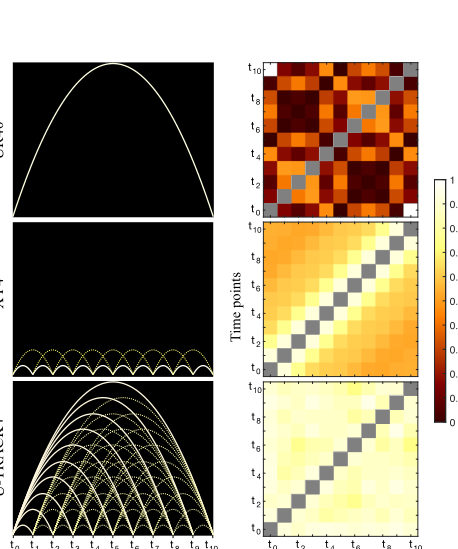
<figcaption class="paper-figure-caption"><b>Fig 1.</b> FIG. 1. Comparison of the design principles of two conven- tional DD sequences (UR40, top row, and XY4, middle row) with the novel tracking-based approach introduced in this pa- per (U-TRACK4, bottom row). On the left, the white arcs represent propagators U(tm, tn) designed to approximate the identity operator I from time point tm to time point tn for 0 ≤m &lt; n ≤10. Yellow dashed lines indicate propagators that, by direct transitivity, also approximate the identity op- erator. On the right, fidelities measuring the proximity of U(tm, tn) to I, averaged over a range of frequency detunings and pulse-amplitude deviations, are shown. Trivial diagonal entries with U(tn, tn) = I are grayed out....</figcaption>
</figure>
<figure class="paper-figure-card">
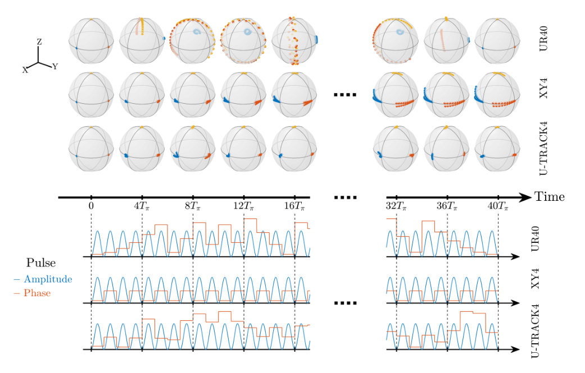
<figcaption class="paper-figure-caption"><b>Fig 2.</b> FIG. 2. Effect of three dynamical decoupling sequences on qubit dynamics, shown on the Bloch sphere (top) and as pulse waveforms (bottom). Each row corresponds to one sequence (UR40, XY4, U-TRACK4); each sphere is a snapshot in time, progressing from t = 0 to t = 40 Tπ, where Tπ is the duration of one π-pulse. Points mark qubit states initialized on X (blue), Y (red), and Z (yellow). Each evolves under a different detuning strength; a tight cluster therefore indicates resilience to detuning errors, while a spread or displaced set of points indicates sensitivity. Ideally, every point returns to its starting position by T = 40 Tπ. UR40 achieves a very robust state recovery at T but not at...</figcaption>
</figure>
<figure class="paper-figure-card">
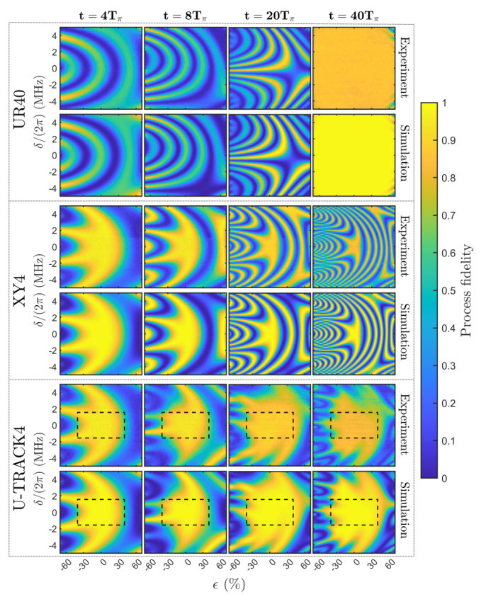
<figcaption class="paper-figure-caption"><b>Fig 3.</b> FIG. 3. Process fidelities of different dynamical decoupling sequences as functions of pulse-amplitude error ϵ and frequency detuning δ, which are intentionally engineered in the quantum device. For each sequence, the top row shows experimental measurements, while the bottom row shows the corresponding simulation results. Each column corresponds to the fidelity obtained after 4, 8, 20, and 40 π-pulses, respectively, with each π-pulse having a duration of Tπ = 128 ns. The dotted rectangle shows the parameter ranges over which the U-TRACK4 sequence was optimized with assigned weights in the central region, as described in Appendix A. Technical details of the experimental implementation and...</figcaption>
</figure>
<figure class="paper-figure-card">
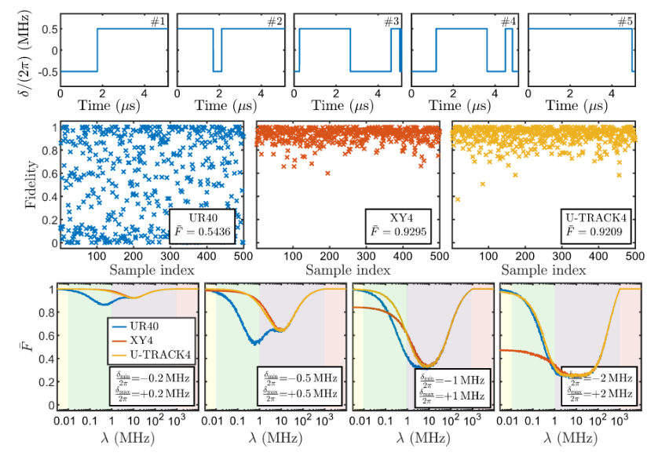
<figcaption class="paper-figure-caption"><b>Fig 4.</b> FIG. 4. First row: Five representative samples of detuning versus time under random telegraph noise (RTN) generated with a switching rate λ = 0.5 MHz, and detuning levels of ±0.5 MHz, illustrating the stochastic variability of noise. Second row: Simulated sequence fidelity at the idle time (T = 5.12 µs, corresponding to 40 π-pulses) computed for 500 samples (λ = 0.5 MHz, δ(t)/(2π) = ±0.5 MHz). Results are shown for the three dynamical decoupling sequences indicated in the legend. ¯F denotes the average fidelity over the 500 samples. Third row: Average fidelity over 2,000 samples as a function of λ, shown for different detuning levels as indicated in the legend. The different-colored strips...</figcaption>
</figure>
<figure class="paper-figure-card">
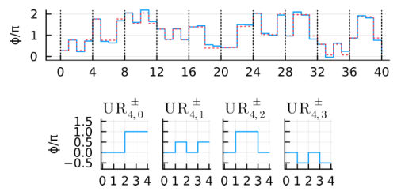
<figcaption class="paper-figure-caption"><b>Fig 5.</b> FIG. 6. Top: Optimized U-TRACK4 pulse phases for 10 blocks (solid blue). For comparison, the closest approxi- mating XUR4 sequence (defined in the main text) is shown in red dotted. Bottom: The four distinct UR± 4,k pulses (k = 0, 1, 2, 3). UR± 4,1 is equivalent to XY4 and UR± 4,0 equals the MLEV4 sequence [38, 52, 57]. The remaining two cases are obtained by applying a cyclic phase shift and possibly adding a global phase offset. Details about the pulse opti- mization are provided in Appendix A.</figcaption>
</figure>
</div>

<p><strong>Summary.</strong> This work introduces Universal Optimal Tracking (U-TRACK), a sophisticated method for designing Dynamical Decoupling sequences that actively correct residual errors block-by-block. By optimizing these novel XUR pulse structures, the authors demonstrate superior noise suppression compared to traditional methods like XY4 or UR40 on superconducting qubits. This establishes U-TRACK as a practical and highly robust tool for extending quantum coherence times in noisy hardware.</p>
<p><strong>Why it may be interesting.</strong> For a theoretical physicist in this area, the development of an algorithm that moves beyond simple periodic repetition to dynamically compensate for accumulated errors represents a significant conceptual leap in quantum control theory. The combination of optimization techniques (GA + GRAPE) applied to physical constraints is highly relevant.</p>
<details>
<summary>Detailed structure</summary>
<p><strong>Main problem.</strong> The primary goal is designing robust Dynamical Decoupling (DD) sequences to suppress environmental noise and prevent error accumulation during long idle periods in quantum computation.</p>
<p><strong>Main result.</strong> A novel Universal Optimal Tracking (U-TRACK) approach yields XUR pulse sequences that dynamically compensate for residual errors at every block, significantly outperforming conventional periodic schemes like XY4 or UR40, especially under low-frequency noise.</p>
<p><strong>Method.</strong> The authors use a combination of gradient optimization (GRAPE) and global search techniques (Genetic Algorithm) to optimize the phases of multiple pulse blocks simultaneously, ensuring high fidelity across intermediate checkpoints.</p>
<p><strong>Model / system.</strong> The work is demonstrated on superconducting-qubit platforms (e.g., transmon processors). The underlying physics involves controlling qubit evolution under noise sources like frequency detuning and amplitude errors ($\epsilon, \delta$).</p>
<p><strong>Key observables.</strong> Process fidelity ($F$) measured over long idle times; average fidelity ($ar{F}$) calculated across parameter error grids $(\epsilon, \delta)$; robustness profiles against Random Telegraph Noise (RTN).</p>
<p><strong>Important parameters / regimes.</strong> Noise regimes defined by the switching rate $\lambda$ of RTN (e.g., low-frequency vs. high-frequency); pulse parameters include amplitude errors ($\epsilon$) and detuning ($\delta$).</p>
<p><strong>Assumptions / limitations.</strong> The U-TRACK method assumes that error compensation can be achieved block-by-block, leading to non-periodic optimal sequences; simulations often rely on specific pulse shapes like DRAG pulses.</p>
<p><strong>Figures summary.</strong> Figures compare the fidelity decay of UR40, XY4, and U-TRACK4 across various noise regimes (static, low-frequency RTN), demonstrating U-TRACK's superior sustained performance. Later figures detail process fidelity vs. error parameters ($\epsilon, \delta$) for multiple blocks.</p>
<p><strong>Paper structure.</strong> The paper introduces the limitations of standard DD methods, proposes and optimizes the U-TRACK framework using global optimization algorithms, validates its performance against various noise models (static, time-dependent RTN), and finally compares it experimentally/numerically against established sequences like XY4 on superconducting hardware.</p>
</details>
<details>
<summary>Abstract</summary>
<p>Dynamical decoupling (DD) is a widely used and resource-efficient technique for error suppression, but conventional DD relies on periodically repeating a short pulse block to refocus the qubit state during idle periods. Imperfections in this block cause residual errors to accumulate, ultimately degrading state recovery over long idle times. Here, we introduce a universal optimal tracking approach that extends the original tracking concept to a fully state-independent setting for designing DD sequences. By monitoring the qubit's evolution at predefined waypoints during optimization, the method dynamically compensates residual errors while preserving regular refocusing. Experimental demonstrations on a superconducting-qubit platform confirm the suppression of error accumulation under static control imperfections, in agreement with numerical predictions. Complementary simulations further show that optimal-tracking-based sequences maintain strong performance under time-dependent noise. These results establish optimal tracking as a practical and hardware-agnostic approach to designing short, robust DD sequences suitable for noisy quantum devices.</p>
</details>
<p><sub><a href="#top">↑ back to top</a></sub></p>

<p><a id="paper-2606.22376"></a></p>
<h3 id="vibe-calibration-autonomous-bring-up-of-a-112-qubit-superconducting-quantum-processor-by-a-skill-orchestrating-language-agent"><a href="http://arxiv.org/abs/2606.22376v1">Vibe Calibration: Autonomous Bring-up of a 112-Qubit Superconducting Quantum Processor by a Skill-Orchestrating Language Agent</a></h3>
<p><strong>Authors:</strong> Huikai Xu, Jiaxiu Han, Shigang Ou, Cheng Ye, Zisong Shen, Jing Gao, Yijia Wang, Tianrui Che, Yu Song, Weiyang Liu, Lei Wang, Lin-Feng Zhang, Pan Zhang, Hai-Feng Yu<br>
<strong>Type:</strong> experiment · <strong>Category:</strong> quantum information and computing · <strong>PDF:</strong> <a href="https://arxiv.org/pdf/2606.22376v1">https://arxiv.org/pdf/2606.22376v1</a><br>
<strong>Analysis basis:</strong> full PDF text, analyzed in chunks
<strong>Topic relevance:</strong> 🔥 <code>QC/QI experiment</code> <strong>4/5</strong> · <code>quantum measurements</code> <strong>2/5</strong> · <code>methods for driven-dissipative</code> <strong>1/5</strong></p>
<div class="figure-strip-hint">↔ Scroll figures horizontally</div>
<div class="paper-figures-scroll">
<figure class="paper-figure-card">
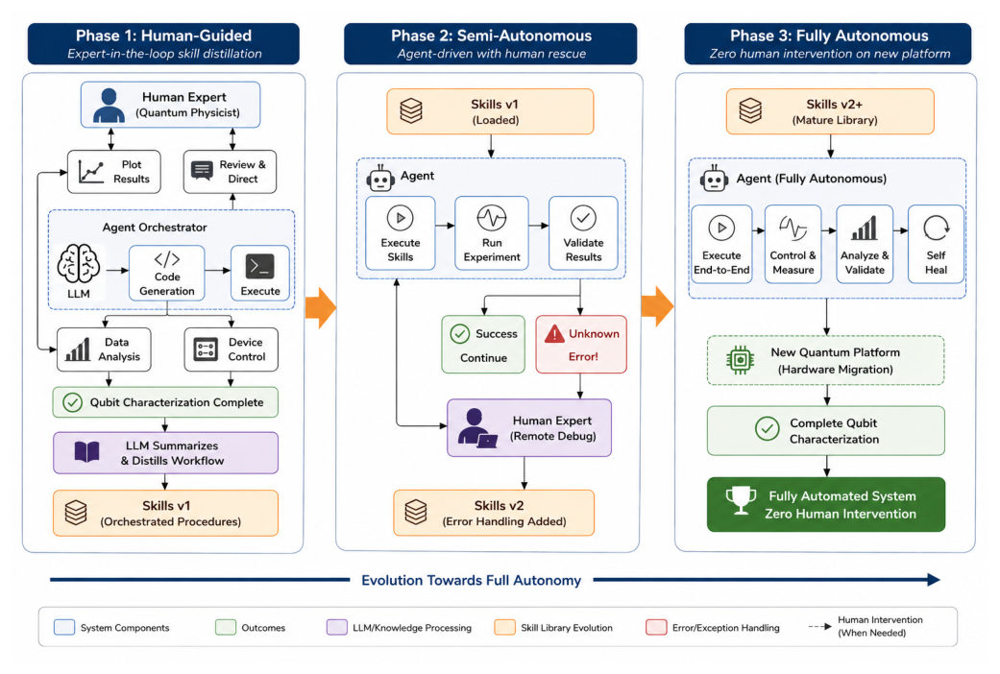
<figcaption class="paper-figure-caption"><b>Fig 1.</b> FIG. 1. Three-phase evolution from human-guided to fully autonomous operation of Vibe Calibration. Phase 1 (Human-Guided): a human expert supervises every iteration, reviewing plotted results and directing the orchestrator that drives an LLM to generate device-control code, run measurements, and analyze data; trajectories that the expert validates are summarized by the LLM into a first-generation skill library (Skills v1). Phase 2 (Semi-Autonomous): the agent operates the skill library on its own, calling on a remote expert only when an unknown error is encountered; each debugging episode is distilled back into the library, augmenting Skills v2 with explicit error-handling logic. Phase 3...</figcaption>
</figure>
<figure class="paper-figure-card">
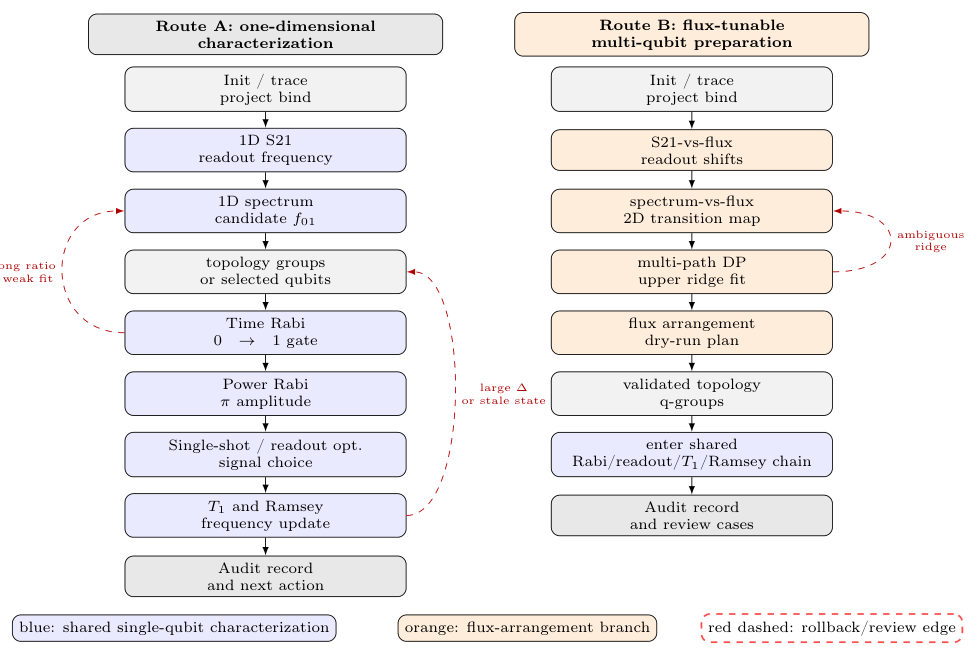
<figcaption class="paper-figure-caption"><b>Fig 2.</b> FIG. 2. Distilled qubit-characterization Skill as a unified decision tree. The workflow exposes two top-level routes that converge on a shared single-qubit characterization chain. Route A (left, blue) handles fixed-frequency or pre-fluxed devices: 1D S21 fixes the readout frequency, 1D spectroscopy proposes a candidate f01, topology groups are formed, and the shared chain (including Time Rabi, Power Rabi, single-shot / readout optimization, T1, and Ramsey) runs to completion. Route B (right, orange) adds the flux-arrangement branch required for tunable multi-qubit devices: S21-vs-flux, spectrum-vs-flux, a multi-path dynamic-programming ridge fit, and a flux-arrangement dry-run plan precede...</figcaption>
</figure>
<figure class="paper-figure-card">
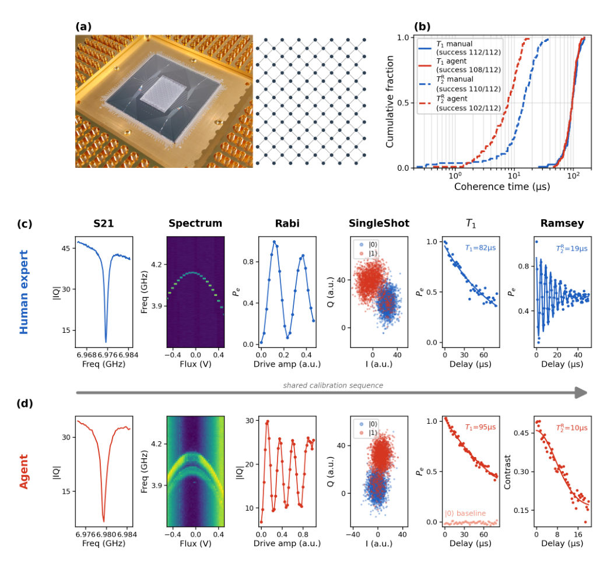
<figcaption class="paper-figure-caption"><b>Fig 3.</b> FIG. 3. Side-by-side comparison of autonomous-agent and manual qubit characterization on a 112-qubit tunable transmon device. (a) Optical image of the 112-qubit frequency-tunable transmon processor (left) and a schematic of its qubit connectivity (right): dots denote qubits and links denote tunable couplers, forming a tilted square lattice of 7 qubits per row over 16 rows in which each interior qubit is coupled to its four diagonal neighbours. (b) Cumulative distributions of the energy-relaxation time T1 and the Ramsey dephasing time T R 2 over all characterized qubits, for the manual (blue) and agent (red) campaigns (T1 solid, T R 2 dashed; logarithmic time axis). Legend counts report the...</figcaption>
</figure>
<figure class="paper-figure-card">
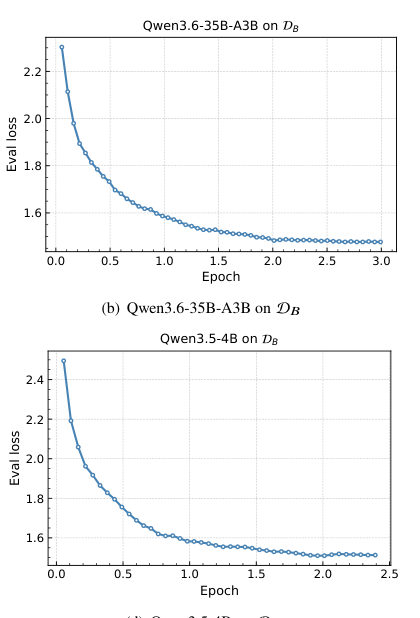
<figcaption class="paper-figure-caption"><b>Fig 4.</b> Figure 1. Validation loss curves over training for all four fine-tuning runs.</figcaption>
</figure>
<figure class="paper-figure-card">
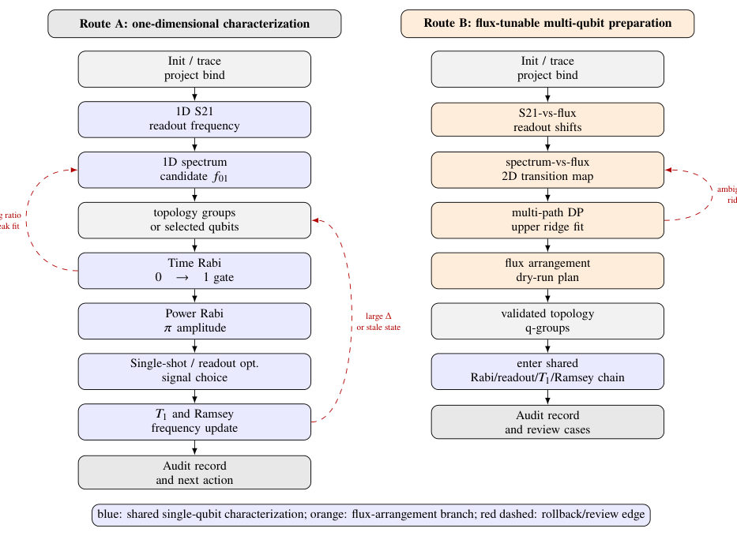
<figcaption class="paper-figure-caption"><b>Fig 5.</b> Figure 2. Unified Skill workflow redrawn as two main columns. The left column shows the one-dimensional characterization route. The right column shows the flux-tunable multi-qubit route, which performs flux arrangement before entering the shared characterization chain.</figcaption>
</figure>
</div>

<p><strong>Summary.</strong> The paper introduces Vibe Calibration, an autonomous system using LLM agents to automate the complex and expert-dependent process of calibrating large superconducting quantum processors. By formalizing expert knowledge into structured 'Skills,' the system achieves significant speedups and robustness compared to manual operation. This work establishes a reusable, auditable infrastructure for scaling quantum hardware operations.</p>
<p><strong>Why it may be interesting.</strong> This work is highly relevant as it tackles the operational bottleneck of quantum hardware by treating calibration not as a set of fixed scripts but as an abstract, reusable, agentic workflow that can be generalized across different physical architectures.</p>
<details>
<summary>Detailed structure</summary>
<p><strong>Main problem.</strong> The calibration complexity of superconducting quantum processors is a major bottleneck for scaling toward fault-tolerant quantum computing, as conventional scripts are brittle and expert judgment is limited.</p>
<p><strong>Main result.</strong> The system autonomously completed calibration on a 112-qubit processor in 4.7 hours, achieving a $4–5	imes$ speedup over manual methods while demonstrating transferable core decision logic across devices.</p>
<p><strong>Method.</strong> An autonomous calibration system, Vibe Calibration, orchestrates complex workflows by distilling expert tacit knowledge into reusable, auditable 'Skills' structured as decision trees.</p>
<p><strong>Model / system.</strong> The physical platform is a superconducting quantum processor featuring 112 frequency-tunable transmon qubits. The methodology involves using Large Language Model agents to execute these Skills via parameterized measurement commands and quantitative acceptance criteria.</p>
<p><strong>Key observables.</strong> $T_1$ relaxation time, Ramsey dephasing time ($T_{R2}$), Rabi frequencies, S21 readout response, and visibility.</p>
<p><strong>Important parameters / regimes.</strong> 112 qubits; 4.7 hours (autonomous runtime); $4–5	imes$ speedup over manual calibration.</p>
<p><strong>Assumptions / limitations.</strong> The core assumption is that expert knowledge can be formalized into reusable Skills, allowing the system to pursue the <em>purpose</em> of a measurement rather than just mimicking specific human actions.</p>
<p><strong>Figures summary.</strong> Figures illustrate the three-phase evolution from human supervision to full autonomy (Fig. 1), detail the decision tree structure of a qubit-characterization Skill (Fig. 2, Fig. 4), and compare autonomous vs. manual characterization results for $T_1$ and $T_{R2}$ on the 112-qubit device (Fig. 3).</p>
<p><strong>Paper structure.</strong> The paper details a phased development: initial single-qubit calibration, scaling to 16 qubits, and culminating in the full 112-qubit system. The structure emphasizes distilling expertise into Skills, executing multi-step pipelines (Spectrum $
ightarrow$ Power Rabi $
ightarrow$ SingleShot $
ightarrow$ T1 $
ightarrow$ Ramsey), and demonstrating generalization.</p>
</details>
<details>
<summary>Abstract</summary>
<p>Superconducting quantum computing is one of the most mature solid-state platforms for quantum computation, with processors exceeding one hundred qubits. Yet further scaling toward fault-tolerant quantum computing is increasingly constrained by calibration complexity. Conventional scripts are brittle to anomalous signals, and expert judgment is bounded by cognitive bandwidth and serial operation time, failing to keep pace with system scale. Here we report Vibe Calibration, an autonomous calibration system orchestrated by large language model agents, which distills expert tacit knowledge into reusable Skills. Each Skill is organized as a decision tree that packages parameterized measurement commands, quantitative acceptance criteria, and audit records, enabling autonomous execution and self-healing. We capture this knowledge through a three-phase human-in-the-loop distillation process and fine-tune a large language model on validated trajectories. On a 112-qubit processor with frequency-tunable transmons, the system autonomously completes calibration of 108 out of 112 qubits in 4.7 hours, achieving a 4--5$\times$ speedup over manual calibration of the full 112 qubits. A cross-validated comparison with expert manual calibration on a 16-qubit subset shows agreement on 14 out of 16 qubits. More importantly, the model demonstrates transferable calibration workflows across devices. While low-level control scripts require minor interface adaptation for different hardware platforms, the core decision logic and task orchestration generalize to new processors, demonstrating a reusable laboratory interface rather than a memorized script.This work demonstrates, for the first time, fully autonomous calibration of a hundred-qubit superconducting processor through reusable and auditable Skills, removing a critical barrier to scalable quantum hardware operation.</p>
</details>
<p><sub><a href="#top">↑ back to top</a></sub></p>

<p><a id="paper-2606.23082"></a></p>
<h3 id="an-efficient-and-perfect-secret-sharing-scheme-on-a-class-of-non-maximal-quantum-access-structure"><a href="http://arxiv.org/abs/2606.23082v1">An Efficient and Perfect Secret Sharing Scheme on a Class of Non-Maximal Quantum Access Structure</a></h3>
<p><strong>Authors:</strong> Lei Li, Zhi Li<br>
<strong>Type:</strong> theory · <strong>Category:</strong> quantum information and computing · <strong>PDF:</strong> <a href="https://arxiv.org/pdf/2606.23082v1">https://arxiv.org/pdf/2606.23082v1</a><br>
<strong>Analysis basis:</strong> full PDF text, analyzed in chunks
<strong>Topic relevance:</strong> 🔥 <code>entanglement &amp; information structure</code> <strong>4/5</strong> · <code>methods for driven-dissipative</code> <strong>1/5</strong> · <code>quantum measurements</code> <strong>1/5</strong></p>
<div class="figure-strip-hint">↔ Scroll figures horizontally</div>
<div class="paper-figures-scroll">
<figure class="paper-figure-card">
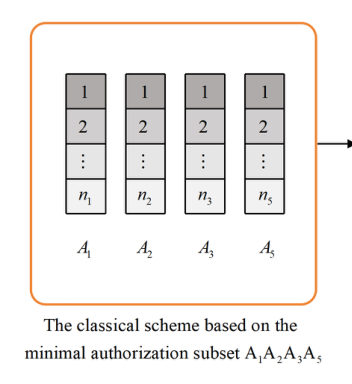
<figcaption class="paper-figure-caption"><b>Fig 1.</b> Figure 1: Flowchart of the proposed scheme</figcaption>
</figure>
</div>

<p><strong>Summary.</strong> This paper develops a novel approach for Quantum Secret Sharing tailored for non-maximal access structures. It characterizes these complex QAS using information theory tools and proposes a hybrid scheme that combines quantum entanglement distribution with classical sharing. The result is a provably perfect and efficient secret sharing protocol applicable to specific hyperstar network topologies.</p>
<p><strong>Why it may be interesting.</strong> While focused on quantum information theory rather than condensed matter physics, the rigorous mathematical framework used to analyze resource constraints (efficiency) and perfect security in quantum protocols is highly relevant to understanding error correction and state preparation in complex quantum systems.</p>
<details>
<summary>Detailed structure</summary>
<p><strong>Main problem.</strong> The paper addresses the challenge of constructing efficient and perfect quantum secret sharing (QSS) schemes for non-maximal Quantum Access Structures (QAS). It aims to overcome resource consumption issues inherent in current QSS protocols.</p>
<p><strong>Main result.</strong> A universal, efficient, and perfect quantum secret sharing scheme is proposed for a specific class of non-maximal QAS (the hyperstar with three hyperedges) by combining quantum entanglement distribution with classical secret sharing techniques.</p>
<p><strong>Method.</strong> The methodology involves characterizing forbidden and intermediate sets within the non-maximal QAS using concepts like quantum mutual information. The construction utilizes entangled states and Pauli operators to encode and reconstruct the secret state.</p>
<p><strong>Model / system.</strong> The model is Quantum Secret Sharing, where a quantum state $|	ext{K}
angle$ is shared among participants according to an access structure $\Gamma$. The specific structures analyzed are derived from hyperstars with three hyperedges.</p>
<p><strong>Key observables.</strong> Quantum Mutual Information $I(A:K)$, Von Neumann Entropy $S(K)$, and the ability of authorized vs. unauthorized subsets to recover the secret state $|	ext{K}
angle$.</p>
<p><strong>Important parameters / regimes.</strong> The structure type (hyperstar with three hyperedges), the threshold parameters $(k, n)$, and the entanglement properties derived from Schmidt decomposition.</p>
<p><strong>Assumptions / limitations.</strong> The analysis often assumes pure-state encoding for the QAS realization. The final PQSS scheme relies on combining quantum sharing over a representative element QAS ($R_i$) with a perfect classical secret sharing component.</p>
<p><strong>Figures summary.</strong> Figure 1 illustrates the flowchart of the proposed PQSS scheme for a minimal authorized subset based on $\Gamma_3$.</p>
<p><strong>Paper structure.</strong> The paper progresses by first characterizing non-maximal QAS (defining forbidden/intermediate sets), then establishing theoretical links between these sets and information leakage via mutual information. Finally, it constructs and proves the security of the hybrid PQSS scheme for specific hyperstar substructures.</p>
</details>
<details>
<summary>Abstract</summary>
<p>Quantum secret sharing is one of the core security technologies in the field of quantum communication. Aiming at the problems of high quantum resource consumption and the difficulty in balancing security and efficiency existing in current quantum secret sharing schemes under non-maximal quantum access structure(QAS), this paper focuses on the judgment criteria of non-maximal QAS and the construction methods of efficient and perfect quantum secret sharing schemes on a kind of non-maximal QAS, i.e. hyperstar with three hyperedges. Firstly, we characterizes the forbidden sets and intermediate sets within this non-maximal QAS, and provides a characterization for non-maximal QAS realizable by pure-state encoding. Secondly, the representative element QAS of hyperstar with three hyperedges is defined, which serves as a substructure of this hyperstar QAS, and belongs to non-maximal QAS. Furthermore, we propose a universal, efficient, and perfect quantum secret sharing scheme based on this hyperstar QAS using corresponding classical secret sharing scheme as an auxiliary. By deploying lightweight quantum resources to representative element access structures, the proposed scheme reduces the difficulty in quantum state preparation and distribution, and enhances its security and resource utilization efficiency.</p>
</details>
<p><sub><a href="#top">↑ back to top</a></sub></p>

<p><a id="paper-2606.21752"></a></p>
<h3 id="configurable-algorithms-for-histopathologic-cancer-detection-on-quantum-hardware"><a href="http://arxiv.org/abs/2606.21752v1">Configurable Algorithms for Histopathologic Cancer Detection on Quantum Hardware</a></h3>
<p><strong>Authors:</strong> Nandika Goyal, Glen Uehara, Andreas Spanias<br>
<strong>Type:</strong> both · <strong>Category:</strong> quantum information and computing · <strong>PDF:</strong> <a href="https://arxiv.org/pdf/2606.21752v1">https://arxiv.org/pdf/2606.21752v1</a><br>
<strong>Analysis basis:</strong> full PDF text, analyzed in chunks
<strong>Topic relevance:</strong> 🔥 <code>QC/QI experiment</code> <strong>4/5</strong> · <code>methods for driven-dissipative</code> <strong>1/5</strong></p>
<div class="figure-strip-hint">↔ Scroll figures horizontally</div>
<div class="paper-figures-scroll">
<figure class="paper-figure-card">
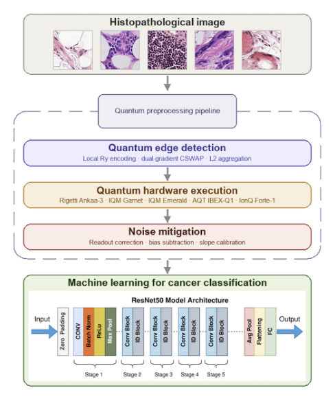
<figcaption class="paper-figure-caption"><b>Fig 1.</b> Figure 1: Overview of the proposed quantum edge detection pipeline for histopathologic cancer classification on real quantum hardware.</figcaption>
</figure>
<figure class="paper-figure-card">
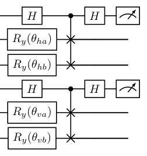
<figcaption class="paper-figure-caption"><b>Fig 2.</b> Figure 2: The 6-qubit DG-CSWAP circuit computes H and V edge responses in parallel. Each ancilla (q4, q5) runs an independent swap test over its data pair. Only the ancilla measurement outcomes are used for edge estimation.</figcaption>
</figure>
<figure class="paper-figure-card">
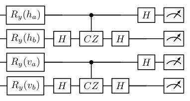
<figcaption class="paper-figure-caption"><b>Fig 3.</b> Figure 3: The 4-qubit DG-DST circuit. On SC20/SC54 hardware, the CNOT is implemented as H · CZ · H using the CZ gate native to SC20/SC54, and Ry and H gates are compiled to PRx rotations. Bell-basis measurement directly estimates p(Ψ−) with no ancilla. Other platforms compile the same logical circuit to their native gate sets (iSWAP, GPI/GPI2/ZZ, RXX) via AWS Braket.</figcaption>
</figure>
<figure class="paper-figure-card">
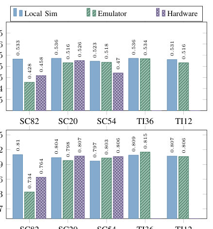
<figcaption class="paper-figure-caption"><b>Fig 4.</b> Figure 4: Preliminary cross-platform quality vs. Sobel (single run per platform). All local sims: r ≈0.52–0.54; SC20 hardware: r = 0.526, r(hw,local) = 0.931; SC54 hardware: r = 0.470, r(hw,local) = 0.895; SC82 hardware: r = 0.458. SC82 emulator lower (r = 0.428) due to noise model distortion. Hardware runs not performed for TI36 or TI12.</figcaption>
</figure>
<figure class="paper-figure-card">
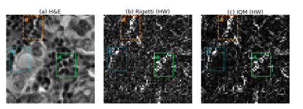
<figcaption class="paper-figure-caption"><b>Fig 5.</b> Figure 5: Hardware quantum edge maps on the same 64×64 H&amp;E patch. (a) Original. (b) SC82 (Rrep=20, P=6, two-stage correction). (c) SC20 (Rrep=4, P=3, three-stage correction). ROIs A–C: A (dense nuclear cluster), B (inter-cellular boundary region), C (gland-lumen interface). Both platforms detect the same boundaries using different native gate sets (iSWAP vs. CZ), confirming hardware-agnostic edge detection (rL,H=0.822 SC82, rL,H=0.931 SC20).</figcaption>
</figure>
</div>

<p><strong>Summary.</strong> This paper presents a novel, hardware-aware quantum approach to enhance histopathologic cancer detection by extracting robust edge features from medical images using superconducting and trapped-ion quantum processors. By developing configurable circuits and implementing a multi-stage noise mitigation pipeline, the authors demonstrate high inter-platform consistency and achieve strong classification accuracy on real NISQ hardware.</p>
<p><strong>Why it may be interesting.</strong> The rigorous testing of quantum algorithms on multiple physical hardware backends (superconducting vs. trapped ion) while implementing advanced noise mitigation techniques is highly relevant for understanding the feasibility of near-term quantum machine learning applications.</p>
<details>
<summary>Detailed structure</summary>
<p><strong>Main problem.</strong> The challenge of performing reliable histopathologic cancer detection from complex tissue images using near-term quantum hardware.</p>
<p><strong>Main result.</strong> The proposed quantum edge detection method achieves high inter-platform consistency ($r \approx 0.93–0.94$) and reaches 79.80% classification accuracy on real hardware, outperforming prior QFT baselines.</p>
<p><strong>Method.</strong> It employs configurable quantum circuits (DG-CSWAP/DG-DST) to estimate multi-directional edge responses via overlap measurements, coupled with a three-stage NISQ error mitigation pipeline.</p>
<p><strong>Model / system.</strong> The work is tested on five diverse quantum processors via Amazon Braket (superconducting and trapped-ion), operating under Noisy Intermediate-Scale Quantum (NISQ) constraints.</p>
<p><strong>Key observables.</strong> Inter-platform Pearson correlation ($r \approx 0.93–0.94$), classification accuracy (79.80%), and the corrected edge estimate $e_{	ext{corr}}^c$.</p>
<p><strong>Important parameters / regimes.</strong> The use of angle encoding $|\psi(p)
angle = R_y(	heta) |0
angle$ for pixel values, and the specific parameters for noise mitigation stages.</p>
<p><strong>Assumptions / limitations.</strong> The primary assumption is that the quantum edge map derived from shot-based measurements can serve as a robust feature input to classical deep learning models (ResNet-50).</p>
<p><strong>Figures summary.</strong> Figures illustrate the end-to-end pipeline, the 6-qubit DG-CSWAP circuit structure, and comparative results showing classification performance improvements over baselines on real hardware.</p>
<p><strong>Paper structure.</strong> The paper introduces the problem, details two quantum circuits (DG-CSWAP/DG-DST) for edge estimation, rigorously applies a three-stage NISQ mitigation pipeline, validates consistency across five different QPU platforms, and finally demonstrates classification performance using a ResNet-50.</p>
</details>
<details>
<summary>Abstract</summary>
<p>Histopathologic cancer detection is challenging due to tissue variability, staining differences, and subtle visual distinctions between disease classes. We propose two quantum algorithms for this task: a configurable dual-gradient CSWAP circuit (DG-CSWAP) that computes multi-directional edge responses in a single execution via per-pixel local Ry encoding, and a hardware-efficient destructive swap circuit (DG-DST) natively matched to quantum processing unit (QPU) gate sets at substantially lower circuit complexity. We prove algebraic equivalence between DG-CSWAP and DG-DST, enabling a two-circuit QPU validation strategy. A three-stage NISQ mitigation pipeline, including readout error correction, bias subtraction, and slope regression, reduces single-pixel hardware MSE by ~8x. Validated on five quantum processors via Amazon Braket, the method achieves inter-platform Pearson r ~ 0.93-0.94 across all local-simulator pairs. Compared to a prior Quantum Fourier Transform (QFT) based amplitude-encoding baseline requiring 12-qubit global state preparation and a three-model ensemble (85.55% on PatchCamelyon), the proposed method uses shot-based measurements, executes on real quantum hardware, and achieves 79.80% accuracy with a single ResNet-50. A Lite configuration delivers a 17x preprocessing speedup at a 2.59% accuracy cost. To the best of our knowledge, this is the first quantum hardware implementation study with noise mitigation for histopathologic image classification.</p>
</details>
<p><sub><a href="#top">↑ back to top</a></sub></p>

<p><a id="paper-2606.22598"></a></p>
<h3 id="nonlinear-geometrizability-of-state-dependent-proto-area-in-approximate-holographic-codes"><a href="http://arxiv.org/abs/2606.22598v1">Nonlinear Geometrizability of State-Dependent Proto-Area in Approximate Holographic Codes</a></h3>
<p><strong>Authors:</strong> Ruiliang Li<br>
<strong>Type:</strong> theory · <strong>Category:</strong> quantum information and computing · <strong>PDF:</strong> <a href="https://arxiv.org/pdf/2606.22598v1">https://arxiv.org/pdf/2606.22598v1</a><br>
<strong>Analysis basis:</strong> full PDF text, analyzed in chunks
<strong>Topic relevance:</strong> 🔥 <code>entanglement &amp; information structure</code> <strong>4/5</strong> · <code>Keldysh / 2PI / non-Gaussian methods</code> <strong>1/5</strong></p>
<div class="figure-strip-hint">↔ Scroll figures horizontally</div>
<div class="paper-figures-scroll">
<figure class="paper-figure-card">
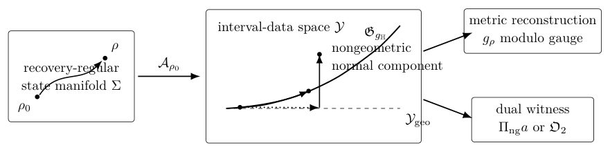
<figcaption class="paper-figure-caption"><b>Fig 1.</b> Figure 1. Geometrizability as a common-source condition. A fixed code and recovery prescription produce a proto-area map from logical states to interval data. Local metrics generate only the nonlinear locus GgH = Im B. Data on this locus reconstruct a metric modulo boundary-fixing diffeomorphisms. Tangential or normal components incompatible with the locus yield boundary- accessible nongeometric witnesses.</figcaption>
</figure>
<figure class="paper-figure-card">
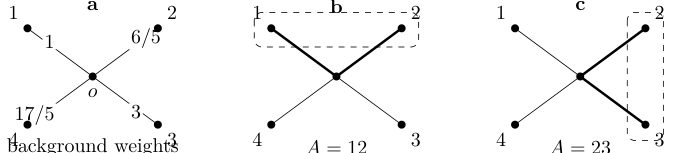
<figcaption class="paper-figure-caption"><b>Fig 2.</b> Figure 2. Fixed four-terminal geometry and local consistency relations. (a) Background weights from Equation (3.64). (b,c) The heavy edges are the selected cuts for regions 12 and 23, which imply q12 = q1 + q2 and q23 = q2 + q3. Violating either identity rules out a local edge-weight realization in this chamber.</figcaption>
</figure>
<figure class="paper-figure-card">
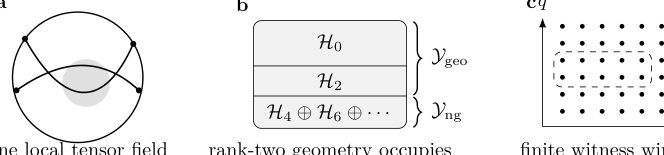
<figcaption class="paper-figure-caption"><b>Fig 3.</b> Figure 3. Linear geometrizability on the hyperbolic disk. (a) Every boundary interval probes the same local metric perturbation along its reference geodesic. (b) The scalar and rank-two transverse-traceless sectors form the closed geometric range in the source-adapted data topology; sectors of order four and above are nongeometric for a metric perturbation. (c) A finite calculation measures a rectangular set of moment witnesses. Enlarging the window converges monotonically to the exact nongeometric defect.</figcaption>
</figure>
<figure class="paper-figure-card">
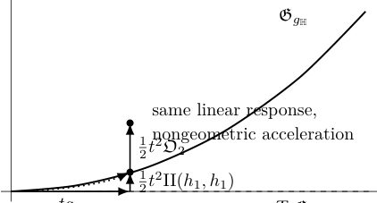
<figcaption class="paper-figure-caption"><b>Fig 4.</b> Figure 4. The nonlinear geometric data locus near the hyperbolic background. Its tangent space is the rank-two X-ray range Ygeo. A genuine metric path has normal acceleration fixed by the second fundamental form IIgH. A proto-area path can share the same first derivative while differing by a quadratic obstruction O2, which no second-order metric coefficient can remove.</figcaption>
</figure>
<figure class="paper-figure-card">
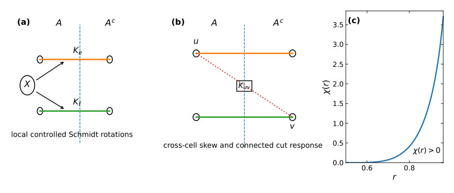
<figcaption class="paper-figure-caption"><b>Fig 5.</b> Figure 5. Controlled bond skews. Local Schmidt rotations alter the entropy of each crossed bond independently and produce data in Im MC. A cross-cell gate between separated bond modes produces a connected cut response b×. The susceptibility χ(r) in (6.27) is strictly positive away from the maximally entangled point.</figcaption>
</figure>
</div>

<p><strong>Summary.</strong> This work rigorously investigates when state-dependent entropy measurements, arising in the context of holographic quantum error correction, correspond to actual local bulk geometries. It establishes a hierarchy of necessary and sufficient conditions—requiring matching first and second-order differential constraints—to prove this geometric compatibility. This bridges advanced topics in quantum information theory with differential geometry.</p>
<p><strong>Why it may be interesting.</strong> It provides a rigorous mathematical framework connecting quantum information measures (entropy/area) derived from holographic codes directly to fundamental geometric properties of spacetime metrics in AdS space.</p>
<details>
<summary>Detailed structure</summary>
<p><strong>Main problem.</strong> The central problem is determining the nonlinear geometrizability of state-dependent proto-area data derived from approximate holographic recovery processes.</p>
<p><strong>Main result.</strong> Geometrizability requires satisfying both first-order (linear) and second-order (quadratic) consistency conditions, which are necessary and sufficient for local metric reconstruction under regularity assumptions.</p>
<p><strong>Method.</strong> The analysis employs tools from differential geometry, including the geodesic X-ray transform, Jacobi equations, and jet calculus to establish rigorous mathematical criteria for geometric realization.</p>
<p><strong>Model / system.</strong> The framework is set in the context of AdS/CFT holography applied to quantum error correction codes. The input data is the state-dependent proto-area ($    ext{SPA}$), which measures entropy differences related to boundary regions.</p>
<p><strong>Key observables.</strong> Proto-Area Map ($  ext{SPA}$), first and second order obstructions ($\Pi_{\mathfrak{g}a_1}$, $\mathcal{O}_2$), and the reconstructed metric two-jet $(h_1, h_2)$.</p>
<p><strong>Important parameters / regimes.</strong> The analysis depends on the regularity of the logical state family ($\Sigma$) and the approximation level (finite network vs. continuum).</p>
<p><strong>Assumptions / limitations.</strong> Assumptions include 'recovery-regularity' for the state manifold and the applicability of split-regularity hypotheses to ensure smooth local geometric structures.</p>
<p><strong>Figures summary.</strong> Figures summarize geometrizability criteria across different levels (network, first jet, two-jet) and compare various bounds on reconstruction errors.</p>
<p><strong>Paper structure.</strong> The paper develops from finite network realization problems using linear algebra constraints to the continuum limit, establishing necessary conditions via Jacobi equations for the second jet, and concluding with explicit reconstruction formulas modulo boundary diffeomorphisms.</p>
</details>
<details>
<summary>Abstract</summary>
<p>State-dependent proto-area data produced by approximate recovery need not be compatible with a single local bulk metric. Using recovery maps calibrated on the code channel and held fixed along a logical-state family, we derive exact finite-resolution criteria and, near the hyperbolic disk, necessary and sufficient conditions for a regular proto-area two-jet to arise from a metric two-jet on a time-reflection-symmetric asymptotically AdS$_3$ slice. Finite networks give a polyhedral realization problem with primal and dual certificates, stable reconstruction, and explicit witnesses of nongeometry. In the continuum, the geometric tangent space is the range of the rank-two geodesic X-ray transform. A metric-forced Jacobi equation determines the normal Hessian of the renormalized boundary-length image and yields a gauge-invariant quadratic obstruction. Under a split-regularity hypothesis, nearby geometric data form a local graph; the two-jet criterion itself is unconditional for regular data. Hamiltonian-skewed codes realize both first-order nongeometry and a response whose first obstruction appears only at quadratic order. The compatible metric perturbation is reconstructed modulo boundary-fixing diffeomorphisms.</p>
</details>
<p><sub><a href="#top">↑ back to top</a></sub></p>

<p><a id="paper-2606.23538"></a></p>
<h3 id="structure-and-information-measures-of-few-electron-systems-under-a-spherically-symmetric-gaussian-potential-within-a-density-functional-approach"><a href="http://arxiv.org/abs/2606.23538v1">Structure and information measures of few-electron systems under a spherically symmetric Gaussian potential within a density functional approach</a></h3>
<p><strong>Authors:</strong> Raveena Arya, Santanu Mondal, Amlan K. Roy<br>
<strong>Type:</strong> theory · <strong>Category:</strong> other · <strong>PDF:</strong> <a href="https://arxiv.org/pdf/2606.23538v1">https://arxiv.org/pdf/2606.23538v1</a><br>
<strong>Analysis basis:</strong> full PDF text, analyzed in chunks
<strong>Topic relevance:</strong> 🔥 <code>entanglement &amp; information structure</code> <strong>4/5</strong></p>
<div class="figure-strip-hint">↔ Scroll figures horizontally</div>
<div class="paper-figures-scroll">
<figure class="paper-figure-card">
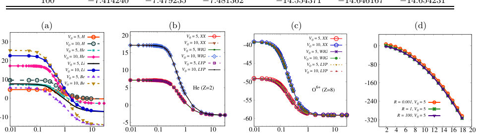
<figcaption class="paper-figure-caption"><b>Fig 1.</b> FIG. 1. E vs. R, for V0 = 5, 10 for ground states of H, He, Li and Be, with XX, is shown in panel (a); for ground states of He and O6+ with XX, XC-WIG, XC-LYP in (b) and (c). Panel (d) gives energy plot for He-like ions, with XX, for V0 = 5.</figcaption>
</figure>
<figure class="paper-figure-card">
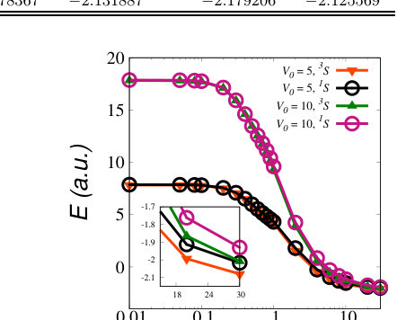
<figcaption class="paper-figure-caption"><b>Fig 2.</b> FIG. 2. He 1s2s (1S, 3S) energies vs. R for V0 = 5 and 10, in GP, at the XX level of theory. See text for details.</figcaption>
</figure>
<figure class="paper-figure-card">
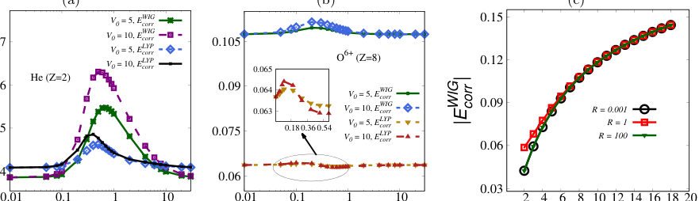
<figcaption class="paper-figure-caption"><b>Fig 3.</b> FIG. 3. The behavior of |EW IG/LY P corr | w.r.t. R, for V0 = 5 and 10. Panels (a), (b) offer these for He and O6+. Panel (c) shows |EW IG corr | w.r.t. Z with V0 = 5 in the He-iso-electronic series. See text for details.</figcaption>
</figure>
<figure class="paper-figure-card">
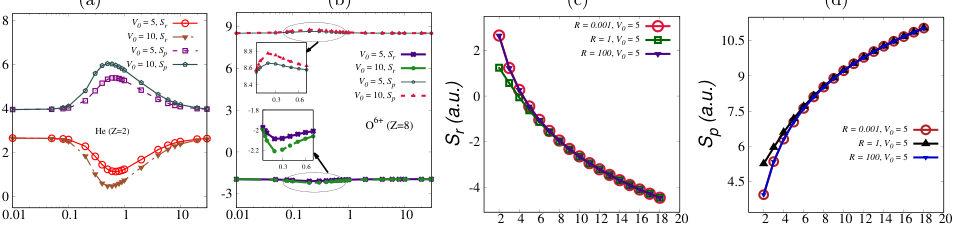
<figcaption class="paper-figure-caption"><b>Fig 4.</b> FIG. 4. Variation of Sr/p w.r.t. R with XC-WIG, for V0 = 5 and 10. Panels (a) and (b) refer to He and O6+. Panel (c) and (d) show Sr w.r.t. Z, and Sp w.r.t. Z, for XC-WIG. In both cases V0 = 5. See text for details.</figcaption>
</figure>
<figure class="paper-figure-card">
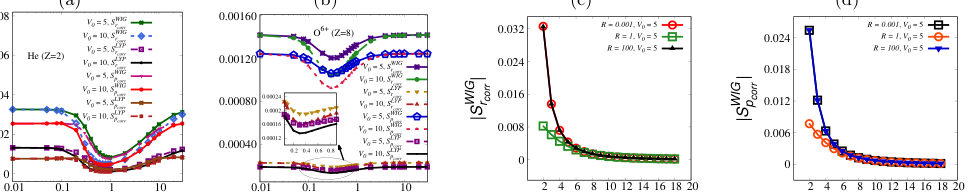
<figcaption class="paper-figure-caption"><b>Fig 5.</b> FIG. 5. Variation of |SW IG/LY P r/pcorr | w.r.t. R, for V0 = 5 and 10, is shown in panels (a) and (b) for He and O6+. Panels (c) and (d) show |SW IG rcorr | w.r.t. Z and |SW IG pcorr | w.r.t. Z, in He-iso-electronic series. In both cases, V0 = 5. See text for details.</figcaption>
</figure>
</div>

<p><strong>Summary.</strong> This work applies Density Functional Theory to study few-electron atoms confined by a Gaussian potential, calculating not only energies but also various information-theoretic measures like Shannon entropy. The results reveal that confinement parameters strongly dictate the system's structure, showing characteristic minima/maxima in localization indicators and mapping these trends onto the Fisher-Shannon plane.</p>
<p><strong>Why it may be interesting.</strong> The integration of quantum information theory (entropy measures) directly into electronic structure calculations for confined systems provides novel diagnostics to quantify electron-electron interaction strength and spatial localization beyond standard energy calculations.</p>
<details>
<summary>Detailed structure</summary>
<p><strong>Main problem.</strong> The study investigates the electronic structure and associated information measures of few-electron atoms confined by a spherically symmetric Gaussian potential using Density Functional Theory (DFT). The goal is to understand how confinement parameters affect energy, localization, and correlation effects.</p>
<p><strong>Main result.</strong> Changes in potential width ($R$) cause specific trends in observables: $S_r$ exhibits minima while $S_p$ and $I_r$ attain maxima. Furthermore, the Fisher-Shannon plane reveals progressive electronic density compression, indicating weakening relative electron-correlation effects.</p>
<p><strong>Method.</strong> The research employs DFT formalism, solving the Kohn-Sham equation using a generalized pseudo-spectral (GPS) method. Correlation is treated via Wigner or LYP functionals, and information measures like Shannon entropy ($S_r, S_p$) and Fisher information ($I_r$) are calculated.</p>
<p><strong>Model / system.</strong> The system models few-electron atoms/ions ($    ext{H},     ext{He-like } Z=2-18,   ext{Li},    ext{Be}$) confined by a Gaussian Potential $V_{	ext{conf}}(r)$. The effective potential incorporates the external confinement alongside standard Coulomb and exchange-correlation terms.</p>
<p><strong>Key observables.</strong> Ground/excited state energies ($E$), Shannon entropy in position ($S_r$) and momentum ($S_p$) spaces, Fisher information ($I_r$), and various correlation measures ($    ext{Srcorr},    ext{Spcorr},    ext{Stcorr}$).</p>
<p><strong>Important parameters / regimes.</strong> Gaussian potential parameters ($V_0$, $R$), atomic number ($Z$), and the functional choice (Wigner vs. LYP). Analysis focuses on intermediate regimes of $R$ where confinement effects are strongest.</p>
<p><strong>Assumptions / limitations.</strong> The calculations rely on DFT approximations, specifically using work function-based exchange potentials and parameterized correlation functionals (Wigner/LYP). The GPS method is used for solving the KS equation.</p>
<p><strong>Figures summary.</strong> Figures illustrate energy dependence on $R$ vs. $V_0$, excitation energies ($1s2s$), and how various information measures ($    ext{Ir}_{   ext{corr}}$, etc.) vary non-monotonically with $R$ and $Z$. The Fisher-Shannon plane is used to map localization trends.</p>
<p><strong>Paper structure.</strong> The paper systematically analyzes energy calculations across different atomic species under Gaussian confinement, followed by a detailed investigation of information measures ($S_r, S_p, I_r$) and correlation terms. Key findings are presented through comparative analysis across varying potential parameters ($R, V_0$) and atomic numbers ($Z$).</p>
</details>
<details>
<summary>Abstract</summary>
<p>Energies of H, He-like ($Z=2-18$) ions, Li, and Be are investigated under a spherically symmetric Gaussian potential through a density functional formalism. The radial Kohn-Sham equation has been solved by invoking a work function-based exchange potential. The effect of electron correlation is analyzed by incorporating two functionals: a local parameterized Wigner functional and a non-linear gradient- and Laplacian-dependent Lee-Yang-Parr (LYP) functional. The generalized pseudospectral method is employed to provide accurate numerical eigenfunctions and eigenvalues. This allows nonuniform, optimal spatial discretization fulfilling the Dirichlet boundary conditions. This work demonstrates a possible manipulation of energy by controlling dot parameters. Apart from ground states, exploratory results are also reported for low-lying excited state $1s2s$ ($^{1,3}S$) of He atom. Companion calculations are also performed for various information-theoretic measures, such as Shannon entropy in position ($S_{r}$), momentum ($S_{p}$) spaces, and Fisher information in position space ($I_{r}$). The behavior of correlation functionals in presence of Gaussian potential is examined critically. We find that energy increases, $S_{r}$ exhibits minima, while $S_{p}$, $I_{r}$ attain maxima for a decrease in the width of potential, whereas an increase in potential depth further amplifies these effects across all properties. The Fisher-Shannon plane reveals a progressive localization as well as the compression of electronic density, and thereby indicates a weakening of relative electron-correlation effects. In the Collin's conjecture, it gives rise to a non-linear loop-like feature. Much of the results are presented here for the first time.</p>
</details>
<p><sub><a href="#top">↑ back to top</a></sub></p>

<p><a id="paper-2606.22240"></a></p>
<h3 id="geometry-controlled-exceptional-points-in-helicoidal-orbital-angular-momentum-photonics"><a href="http://arxiv.org/abs/2606.22240v1">Geometry-Controlled Exceptional Points in Helicoidal Orbital-Angular-Momentum Photonics</a></h3>
<p><strong>Authors:</strong> Edilberto O. Silva<br>
<strong>Type:</strong> both · <strong>Category:</strong> other · <strong>PDF:</strong> <a href="https://arxiv.org/pdf/2606.22240v1">https://arxiv.org/pdf/2606.22240v1</a><br>
<strong>Analysis basis:</strong> full PDF text, analyzed in chunks
<strong>Topic relevance:</strong> <code>analog quantum simulation</code> <strong>3/5</strong> · <code>driven-dissipative phase transition</code> <strong>3/5</strong> · <code>interference shaping light</code> <strong>3/5</strong> · <code>methods for driven-dissipative</code> <strong>2/5</strong> · <code>non-equilibrium dynamics</code> <strong>2/5</strong> · <code>quantum optics experiment</code> <strong>2/5</strong> · <code>Keldysh / 2PI / non-Gaussian methods</code> <strong>1/5</strong> · <code>correlated / nonlocal dissipation</code> <strong>1/5</strong> · <code>correlated cavity matter</code> <strong>1/5</strong> · <code>entanglement &amp; information structure</code> <strong>1/5</strong> · <code>non-equilibrium universality</code> <strong>1/5</strong></p>
<div class="figure-strip-hint">↔ Scroll figures horizontally</div>
<div class="paper-figures-scroll">
<figure class="paper-figure-card">
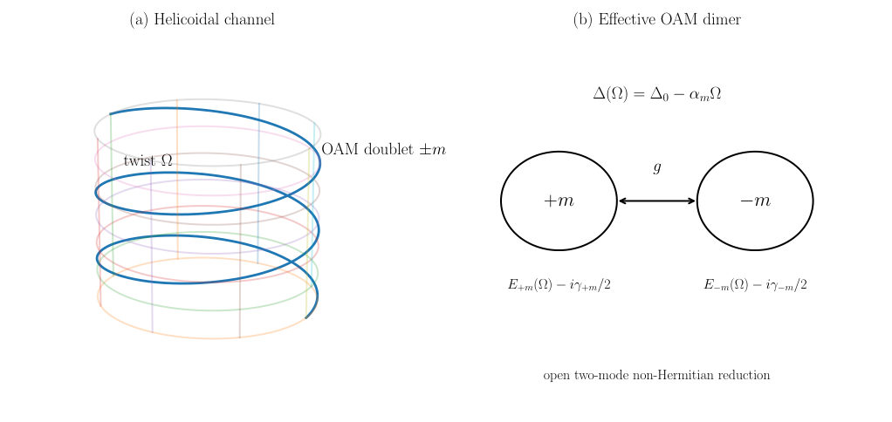
<figcaption class="paper-figure-caption"><b>Fig 1.</b> FIG. 1. Conceptual structure of a geometry-controlled exceptional point. (a) A helicoidal channel or effective helicoidal medium couples axial and azimuthal motion through the twist parameter Ω. (b) Projection onto two opposite-OAM modes gives a non- Hermitian two-mode problem with coupling g, linewidths γ+m and γ−m, and real detuning ∆(Ω) = ∆0 −αmΩ.</figcaption>
</figure>
<figure class="paper-figure-card">
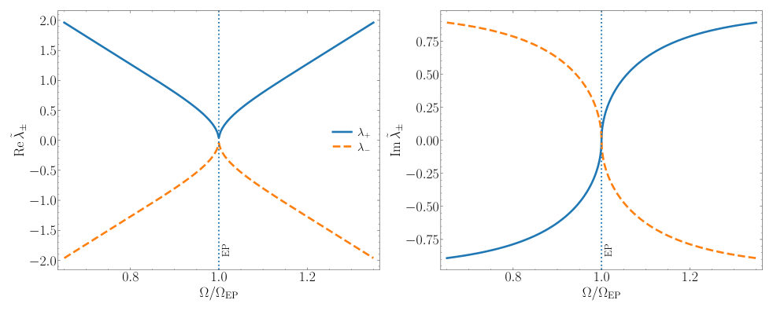
<figcaption class="paper-figure-caption"><b>Fig 2.</b> FIG. 2. Dimensionless eigenvalue branches near a geometry-controlled exceptional point. The plotted quantity is ˜λ± = (λ± −E0 + i¯γ/2)/g for g = 0.10 meV, ∆γ = 4g, and ∆(Ω) = ∆0(1 −Ω/ΩEP). The two eigenvalues and eigenvectors coalesce at Ω= ΩEP.</figcaption>
</figure>
<figure class="paper-figure-card">
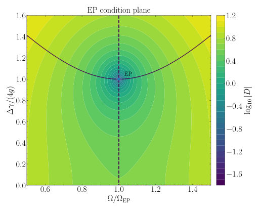
<figcaption class="paper-figure-caption"><b>Fig 3.</b> FIG. 3. Exceptional-point condition in the reciprocal model. The discriminant D = (∆−i∆γ/2)2 + 4g2 vanishes only when the real geometric detuning is compensated, ∆= 0, and the linewidth contrast satisfies |∆γ| = 4|g|. The solid line is Re D = 0, the dashed line is Im D = 0, and the marked intersection gives the exceptional point.</figcaption>
</figure>
<figure class="paper-figure-card">
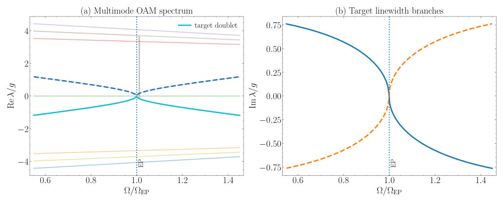
<figcaption class="paper-figure-caption"><b>Fig 4.</b> FIG. 4. Multimode OAM-space test of the geometry-controlled EP. (a) Real parts of the eigenvalues of a finite OAM manifold with modes ℓ= −4, . . . , 4. The thick branches are the target ℓ= ±1 doublet, while the thin branches are spectator OAM modes. The target branches coalesce at the calibrated twist even when weak residual couplings to spectator modes are present. (b) Imaginary parts of the two target branches, showing the associated linewidth coalescence.</figcaption>
</figure>
<figure class="paper-figure-card">
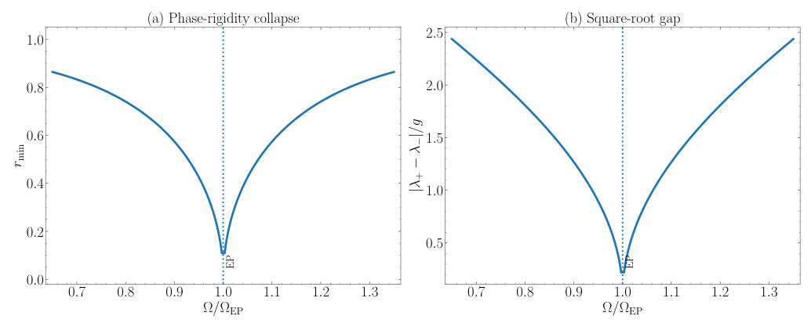
<figcaption class="paper-figure-caption"><b>Fig 5.</b> FIG. 5. Eigenvector-sensitive verification of the geometry-controlled EP. (a) Minimum phase rigidity of the reciprocal complex- symmetric two-mode model as a function of normalized twist. The collapse near Ω= ΩEP indicates eigenvector coalescence rather than a conventional crossing. (b) Corresponding eigenvalue gap, displaying the square root closing at the same twist.</figcaption>
</figure>
</div>

<p><strong>Summary.</strong> The paper presents a comprehensive theoretical and simulation study on controlling Exceptional Points (EPs) in OAM photonics using the geometry of a helicoidal waveguide. By tuning the twist rate ($\Omega$), researchers can force the system into an EP, which is confirmed by observing characteristic signatures like eigenvalue coalescence and phase rigidity collapse. This provides a robust blueprint for designing next-generation photonic devices based on non-Hermitian physics.</p>
<p><strong>Why it may be interesting.</strong> This work bridges geometric control (topology/geometry) with non-Hermitian physics in photonics, offering a highly controllable platform for realizing exotic quantum phenomena that are relevant to integrated quantum optics.</p>
<details>
<summary>Detailed structure</summary>
<p><strong>Main problem.</strong> The paper proposes a novel method to control Exceptional Points (EPs) in Orbital-Angular-Momentum (OAM) photonics using geometric parameters derived from the helicoidal background.</p>
<p><strong>Main result.</strong> They demonstrate that the EP location can be precisely tuned by controlling the geometry (twist rate $\Omega$), providing measurable, falsifiable signatures like linear tracking of the EP with residual detuning.</p>
<p><strong>Method.</strong> The analysis involves reducing the wave dynamics to an effective two-mode non-Hermitian Hamiltonian and applying input-output formalism to map theoretical predictions onto observable spectral maps.</p>
<p><strong>Model / system.</strong> The system is modeled using OAM modes propagating in a helicoidal background, governed by an effective Schrödinger equation derived from the Laplace-Beltrami operator. The dynamics are captured by an effective two-mode Hamiltonian describing coupling between opposite-OAM modes ($\pm m$).</p>
<p><strong>Key observables.</strong> Eigenvalue coalescence, phase-rigidity collapse ($r_j 	o 0$), linear tracking of $    ext{EP}$ vs. residual detuning ($\Delta_0$), and branch exchange upon parameter looping.</p>
<p><strong>Important parameters / regimes.</strong> The helicoidal twist rate ($\Omega$ or $ au$) acts as the primary control parameter, compensating for a residual detuning ($\Delta_0$). The EP condition requires balancing geometric detuning with non-Hermitian losses/gains ($|\Delta\gamma| \sim 4|g|$).</p>
<p><strong>Assumptions / limitations.</strong> The analysis relies on reducing the system to an isolated two-mode doublet, assuming spectator modes remain spectrally separated. It primarily uses semiclassical or coupled-mode approximations.</p>
<p><strong>Figures summary.</strong> Figures illustrate the coalescence of eigenvalue branches (Fig. 2), the collapse of phase rigidity at the EP (Fig. 5), and the linear relationship between $   ext{EP}$ location and external detuning ($\Delta_0$) (Fig. 6, Fig. 10c).</p>
<p><strong>Paper structure.</strong> The paper progresses from deriving the effective Hamiltonian in a helicoidal background to establishing the EP condition via two-mode reduction. It then validates this using multimode spectral tests, introduces advanced diagnostics like phase rigidity and topological looping, and concludes with device simulations on both reciprocal and asymmetric coupling platforms.</p>
</details>
<details>
<summary>Abstract</summary>
<p>Exceptional points (EPs) are non-Hermitian spectral singularities where eigenvalues and eigenvectors coalesce. We propose a geometry-controlled route to EPs in orbital-angular-momentum (OAM) photonics. In an effective torsion-free helicoidal background, the twist supplies a signed, real chiral splitting between opposite-OAM modes, while openness, gain, loss, leakage, or channel coupling, supplies the non-Hermiticity. The EP is reached when the geometric detuning compensates for a residual mode splitting and the linewidth contrast meets the non-Hermitian balance condition; the twist rate is thus the control parameter, not the source of non-Hermiticity. We obtain the OAM slope both for a confined quantum problem and, in the paraxial regime, for a helically twisted guide, and embed the OAM doublet in a multimode mode-space model to show that the EP survives spectator modes. Eigenvalue coalescence, phase-rigidity collapse, linear EP tracking with residual detuning, and branch exchange under geometric encircling provide falsifiable signatures. An OAM-resolved input-output response maps these onto spectroscopy-level observables, including spectral maps and three-dimensional Riemann-surface visualizations. A device-level paraxial simulation of two distinct photonic platforms, one reciprocal and one asymmetric-coupling Wiersig-type platform, reproduces the predicted exceptional point and its linear geometric tracking.</p>
</details>
<p><sub><a href="#top">↑ back to top</a></sub></p>

<p><a id="paper-2606.22920"></a></p>
<h3 id="chaos-generation-and-control-with-molecular-optomechanical-system"><a href="http://arxiv.org/abs/2606.22920v1">Chaos Generation and Control with Molecular Optomechanical System</a></h3>
<p><strong>Authors:</strong> Hui-Hui Xu, Jian-zhuang Wu, Lei-Bo Deng, E Wu, Yong-Hong Ma<br>
<strong>Type:</strong> theory · <strong>Category:</strong> other · <strong>PDF:</strong> <a href="https://arxiv.org/pdf/2606.22920v1">https://arxiv.org/pdf/2606.22920v1</a><br>
<strong>Analysis basis:</strong> full PDF text, analyzed in chunks
<strong>Topic relevance:</strong> <code>Keldysh / 2PI / non-Gaussian methods</code> <strong>3/5</strong> · <code>driven-dissipative phase transition</code> <strong>3/5</strong> · <code>methods for driven-dissipative</code> <strong>3/5</strong> · <code>Tavis-Cummings &amp; cavity-many-emitter</code> <strong>2/5</strong> · <code>correlated cavity matter</code> <strong>2/5</strong> · <code>non-equilibrium dynamics</code> <strong>2/5</strong> · <code>analog quantum simulation</code> <strong>1/5</strong> · <code>correlated / nonlocal dissipation</code> <strong>1/5</strong> · <code>interference shaping light</code> <strong>1/5</strong> · <code>non-equilibrium universality</code> <strong>1/5</strong></p>
<div class="figure-strip-hint">↔ Scroll figures horizontally</div>
<div class="paper-figures-scroll">
<figure class="paper-figure-card">
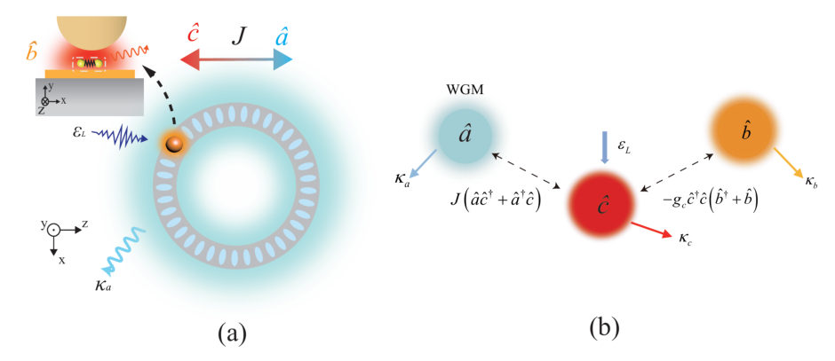
<figcaption class="paper-figure-caption"><b>Fig 1.</b> FIG. 1: Schematic of the hybrid molecular cavity optomechanical system. (a) The hybrid platform consists of a WGM resonator and a nanoparticle-on-mirror (NPoM) plasmonic nanocavity containing a single molecule. (b) Equivalent schematic of the three-mode interaction. The WGM mode ˆa (frequency ωa, decay rate κa) is coupled to the plasmonic mode ˆc (ωc, κc) via an evanescent wave with coupling strength J. The plasmonic mode interacts with the molecular vibrational mode ˆb (ωb, κb) through radiation pressure, with coupling strength gc.</figcaption>
</figure>
<figure class="paper-figure-card">
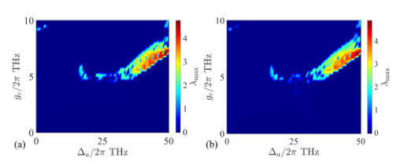
<figcaption class="paper-figure-caption"><b>Fig 2.</b> FIG. 2: Phase diagrams of the largest Lyapunov exponent λmax in the plane of the WGM detuning ∆a and the plasmon-vibration coupling strength gc. (a) Plasmon–WGM coupling strength J/2π = 0.38 THz; (b) J/2π = 0.70 THz. The color bar represents the value of λmax: warm colors (λmax &gt; 0) correspond to chaotic motion, and cold colors correspond to regular steady-state or periodic motion.</figcaption>
</figure>
<figure class="paper-figure-card">

<figcaption class="paper-figure-caption"><b>Fig 3.</b> Figure 2 shows the distribution of λmax in the param- eter space spanned by the WGM detuning ∆a and the plasmon-vibration coupling strength gc. Over a wide de- tuning range, particularly for positive detuning ∆a &gt; 0, increasing gc drives the system into chaos, and the chaotic region as well as the magnitude of λmax expand monotonically with gc. Physically, positive detuning red- shifts the effective frequency of the plasmonic mode, bringing it closer to resonance with the molecular vibra- tional mode and significantly enhancing the energy ex- change efficiency; negative detuning suppresses the non- linear coupling. Hence chaos preferentially emerges for ∆a &gt; 0. The coupling gc directly...</figcaption>
</figure>
<figure class="paper-figure-card">
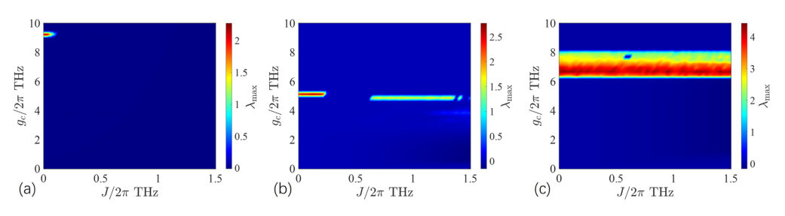
<figcaption class="paper-figure-caption"><b>Fig 4.</b> FIG. 3: Phase diagrams of the largest Lyapunov exponent λmax in the plane of the plasmon–WGM coupling strength J and the plasmon-vibration coupling strength gc under different WGM detunings. (a) ∆a/2π = 0 THz; (b) ∆a/2π = 21 THz; (c) ∆a/2π = 45 THz.</figcaption>
</figure>
<figure class="paper-figure-card">
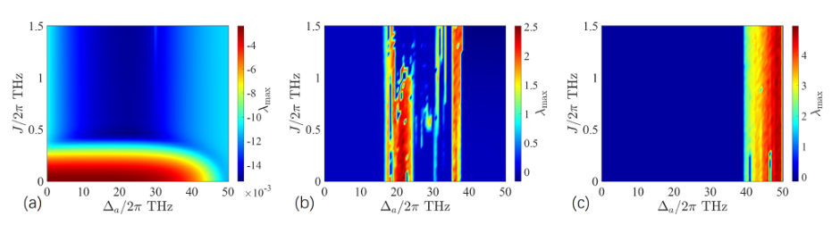
<figcaption class="paper-figure-caption"><b>Fig 5.</b> FIG. 4: Phase diagrams of the largest Lyapunov exponent λmax as a function of the WGM detuning ∆a and the plasmon–WGM coupling strength J under different plasmon–vibration coupling strengths. (a) gc/2π = 0.1 THz; (b) gc/2π = 5 THz; (c) gc/2π = 7 THz.</figcaption>
</figure>
</div>

<p><strong>Summary.</strong> The authors theoretically investigate a hybrid optomechanical system combining plasmonic and WGM cavities coupled to a molecule. They demonstrate that tuning the inter-cavity coupling and detuning allows for the controlled generation of deterministic chaos via molecular vibrations. This establishes the system as a promising, room-temperature platform for on-chip chaotic light sources.</p>
<p><strong>Why it may be interesting.</strong> This work directly bridges cavity QED/optics with molecular physics by demonstrating how engineered coupling mechanisms can induce complex, non-linear dynamics (chaos) in a solid-state platform at ambient temperatures.</p>
<details>
<summary>Detailed structure</summary>
<p><strong>Main problem.</strong> The goal is to achieve deterministic chaotic dynamics for on-chip light generation and random signal applications at room temperature, overcoming limitations of conventional cavity optomechanics.</p>
<p><strong>Main result.</strong> The hybrid molecular optomechanical system was shown to exhibit a controllable period-doubling route to chaos, identifying it as a viable platform for room-temperature chaotic light sources.</p>
<p><strong>Method.</strong> The study uses semiclassical equations of motion and characterizes the dynamics by computing the largest Lyapunov exponent ($\lambda_{\max}$) via the Benettin algorithm.</p>
<p><strong>Model / system.</strong> The system is a hybrid setup coupling a plasmonic nanocavity, a WGM microcavity, and a molecular vibrational mode. The dynamics are modeled using an effective Hamiltonian involving three coupled modes.</p>
<p><strong>Key observables.</strong> Largest Lyapunov exponent ($\lambda_{\max}$), phase-space trajectories (strange attractors), spectral content of light/vibrations.</p>
<p><strong>Important parameters / regimes.</strong> WGM detuning ($\Delta_a$), plasmon--WGM coupling ($J$), and plasmon--vibration coupling ($g_c$).</p>
<p><strong>Assumptions / limitations.</strong> The analysis is performed in the semiclassical limit, treating the molecular vibrations classically while retaining quantum descriptions for cavity fields.</p>
<p><strong>Figures summary.</strong> Figures illustrate the system schematic, phase diagrams mapping chaotic regimes based on control parameters ($\Delta a$ vs $g_c$, etc.), and time/phase-space evolution showing transitions to chaos.</p>
<p><strong>Paper structure.</strong> The paper introduces the physical setup and Hamiltonian, derives the coupled nonlinear equations of motion, analyzes stability using Lyapunov exponents across parameter spaces, and concludes by mapping out controllable chaotic regimes.</p>
</details>
<details>
<summary>Abstract</summary>
<p>Chaos is central to secure communication and physical random-number generation. Conventional cavity-optomechanical implementations, however, usually rely on weak single-photon optomechanical coupling and low-frequency mechanical modes, so access to deterministic chaotic dynamics often requires large driving power and careful suppression of thermal noise. Here we theoretically study a hybrid molecular optomechanical system formed by coupling a plasmonic nanocavity to a whispering-gallery-mode (WGM) microcavity. The plasmonic nanocavity provides terahertz-scale single-photon optomechanical coupling to a molecular vibration, while the WGM resonator offers a low-loss photonic channel that mitigates the short plasmon lifetime. By integrating the semiclassical equations of motion and evaluating the largest Lyapunov exponent, we map the nonlinear dynamical regimes in the parameter spaces of WGM detuning, plasmon--WGM coupling, and plasmon--vibration optomechanical coupling. We show that increasing the plasmon--vibration coupling drives the system from self-sustained oscillations to chaos through a period-doubling cascade. At moderate coupling strengths, isolated chaos windows can be opened or closed by tuning the WGM detuning and the inter-cavity coupling. These results identify molecular optomechanics as a controllable room-temperature platform for on-chip chaotic light generation and random-signal applications.</p>
</details>
<p><sub><a href="#top">↑ back to top</a></sub></p>

<p><a id="paper-2606.21684"></a></p>
<h3 id="exceptional-points-revealed-by-the-integrated-imaginary-scattering-eigenphase"><a href="http://arxiv.org/abs/2606.21684v1">Exceptional Points revealed by the integrated imaginary scattering eigenphase</a></h3>
<p><strong>Authors:</strong> J. Colín-Gálvez, V. Domínguez-Rocha<br>
<strong>Type:</strong> theory · <strong>Category:</strong> other · <strong>PDF:</strong> <a href="https://arxiv.org/pdf/2606.21684v1">https://arxiv.org/pdf/2606.21684v1</a><br>
<strong>Analysis basis:</strong> full PDF text, analyzed in chunks
<strong>Topic relevance:</strong> <code>driven-dissipative phase transition</code> <strong>3/5</strong> · <code>methods for driven-dissipative</code> <strong>3/5</strong> · <code>analog quantum simulation</code> <strong>2/5</strong> · <code>correlated / nonlocal dissipation</code> <strong>2/5</strong> · <code>non-equilibrium dynamics</code> <strong>2/5</strong> · <code>non-equilibrium universality</code> <strong>2/5</strong> · <code>Keldysh / 2PI / non-Gaussian methods</code> <strong>1/5</strong> · <code>Kondo &amp; dissipative impurity</code> <strong>1/5</strong> · <code>Tavis-Cummings &amp; cavity-many-emitter</code> <strong>1/5</strong> · <code>correlated cavity matter</code> <strong>1/5</strong> · <code>interference shaping light</code> <strong>1/5</strong></p>
<div class="figure-strip-hint">↔ Scroll figures horizontally</div>
<div class="paper-figures-scroll">
<figure class="paper-figure-card">
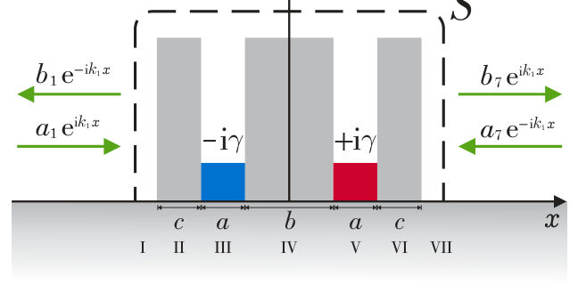
<figcaption class="paper-figure-caption"><b>Fig 1.</b> FIG. 1: (Color online) Diagram of the studied dimer composed of two scattering units, each composed of three potential barriers. The potential of the outer barriers of each scattering unit is real, while the potential described by the central barrier is complex. The sign of the imaginary part of the central barrier gives rise to loss (blue region) or gain (red region). This system is invariant under the combined action of parity and time reversal, and is therefore PT-symmetric.</figcaption>
</figure>
<figure class="paper-figure-card">
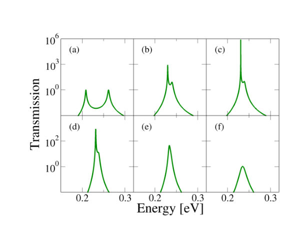
<figcaption class="paper-figure-caption"><b>Fig 2.</b> FIG. 2: (Color online) Log-scale transmission spectrum as a function of energy in which only the first doublet of the dimer is plotted. Dimer parameters, for this and subsequent figures, are a = 1.15 nm, b = 2c = 0.02 nm, Vb = 50 eV, and V ′ = 0 eV. (a) For the Hermitian case (γ = 0) the maximum values of the resonances are found at E1,1 = 0.2086 eV (the first subscript refers to the associated doublet while the second one refers to the associated resonance), and E1,2 = 0.2615 eV. For γ = 0 the resonances have a unit amplitude and a maximum separation. As we increase the value of γ the separation between the resonances decreases and their amplitudes increases before the EP as it is observed...</figcaption>
</figure>
<figure class="paper-figure-card">
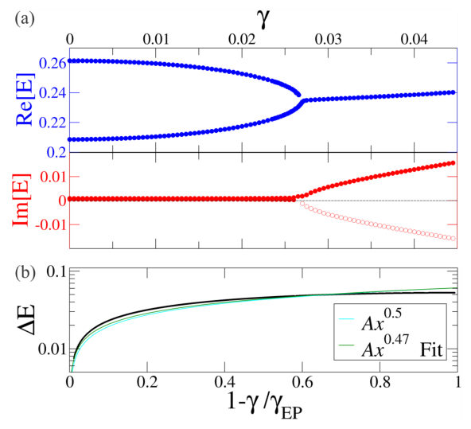
<figcaption class="paper-figure-caption"><b>Fig 3.</b> FIG. 3: (Color online) (a) Evolution of the scattering resonances of the PT-symmetric dimer as a function of γ. The real part (upper panel) tracks the resonance positions: for γ = 0 the doublet is maximally separated due to level repulsion, and the separation decreases monotonically until both resonances coalesce at the exceptional point. Just below γEP only the lower- energy resonance is numerically resolvable, which accounts for the gap in the higher-energy trajectory. Beyond the EP a single merged resonance persists. The imaginary part (lower panel) tracks the resonance widths via the Q factor: as γ increases the resonances broaden and eventually coalesce into a single significantly...</figcaption>
</figure>
<figure class="paper-figure-card">
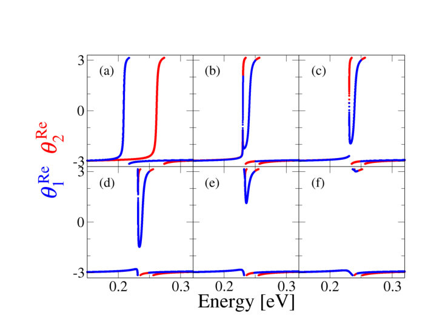
<figcaption class="paper-figure-caption"><b>Fig 4.</b> FIG. 4: (Color online) Real parts θRe 1 (blue) and θRe 2 (red) of the scattering eigenphases as functions of energy for increasing non-Hermitian parameter γ. Dimer parameters are the same as in Fig. 2. (a) For γ = 0 the system is Hermitian and the two eigenphases are well separated, each producing a characteristic π phase advance associated with a distinct resonance of the doublet. (b) The two phase features approach each other in energy as the resonances begin to overlap. (c) The phase features are nearly degenerate, reflecting the proximity to the exceptional point; the higher-energy phase shift begins to lose resolution. (d) The two eigenphases are on the verge of coalescence, just below...</figcaption>
</figure>
<figure class="paper-figure-card">
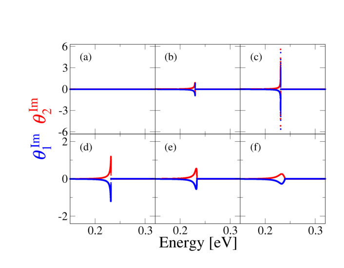
<figcaption class="paper-figure-caption"><b>Fig 5.</b> FIG. 5: (Color online) Imaginary parts θIm 1 (blue) and θIm 2 (red) of the scattering eigenphases as functions of energy for the same values of γ as in Fig. 4. (a) Both imaginary parts vanish identically, consistent with the Hermitian limit. (b) Finite imaginary parts emerge near the resonance energies with opposite signs, indicating that one eigenmode acquires global gain while the other undergoes global loss. (c) The imaginary parts reach their maximum amplitude, with sharp, large-amplitude structures of opposite sign reflecting the peak gain/loss asymmetry of the scattering eigenmodes. Notably, this maximum occurs before the exceptional point, consistent with the inflection of G(γ) shown...</figcaption>
</figure>
</div>

<p><strong>Summary.</strong> The paper introduces the integrated imaginary scattering eigenphase $G(\gamma)$ as a novel, global diagnostic tool to detect Exceptional Points (EPs) in open PT-symmetric systems. By analyzing the S-matrix eigenphases, it shows that $G(\gamma)$ exhibits a unique inflection point preceding the EP, confirming that peak gain/loss asymmetry and state coalescence are governed by distinct physical conditions in open environments.</p>
<p><strong>Why it may be interesting.</strong> This work provides a powerful, model-independent spectroscopic technique for characterizing non-Hermitian degeneracies (EPs) in open quantum systems using only phase measurements, which is highly relevant to modern photonics and metamaterials research.</p>
<details>
<summary>Detailed structure</summary>
<p><strong>Main problem.</strong> To find a direct, phase-sensitive signature of Exceptional Points (EPs) in open PT-symmetric systems that does not rely on identifying individual resonant states.</p>
<p><strong>Main result.</strong> The integrated imaginary scattering eigenphase G(gamma) provides a robust global diagnostic for EPs; its inflection point precedes the EP and coincides with maximum gain/loss asymmetry, demonstrating independent physical mechanisms.</p>
<p><strong>Method.</strong> Analysis is performed entirely at the level of the Scattering Matrix (S-matrix), tracking the evolution of complex scattering eigenphases ($    heta_n$) across the PT-symmetry-breaking transition.</p>
<p><strong>Model / system.</strong> The model is a one-dimensional PT-symmetric quantum dimer with balanced gain and loss, coupled to continuum leads. The analysis is formulated generally for any wave system describable by an S-matrix (photonic, acoustic, microwave).</p>
<p><strong>Key observables.</strong> Scattering Matrix elements ($r, t, r', t'$), complex scattering eigenphases ($    heta_n$), and the integrated imaginary scattering eigenphase $G(\gamma)$.</p>
<p><strong>Important parameters / regimes.</strong> The non-Hermitian strength parameter $\gamma$, which controls the transition from PT-exact to PT-broken symmetry.</p>
<p><strong>Assumptions / limitations.</strong> The analysis is formulated entirely at the level of the S-matrix, making the results universally applicable across different wave systems.</p>
<p><strong>Figures summary.</strong> Figures illustrate the evolution of transmission resonances (Fig. 2) and track resonance positions/widths vs. $\gamma$ (Fig. 3). Crucially, they show the imaginary parts of eigenphases ($ heta_{Im, n}$) developing localized structures of opposite sign near EP (Fig. 5), and plot $G(\gamma)$ showing its characteristic inflection point before saturation (Fig. 6).</p>
<p><strong>Paper structure.</strong> The paper introduces the S-matrix formalism for open PT systems, analyzes the complex eigenphases ($   heta_n$) as a diagnostic tool, develops the global scalar observable $G(\gamma)$, and finally demonstrates that $G(\gamma)$ robustly pinpoints the EP by tracking its unique inflection point.</p>
</details>
<details>
<summary>Abstract</summary>
<p>We propose and analytically demonstrate that the eigenphases of the scattering matrix provide direct, phase-sensitive signatures of exceptional points in open PT-symmetric systems. Using a one-dimensional PT-symmetric quantum dimer with balanced gain and loss, coupled to continuum leads, we track the evolution of the scattering eigenphases across the PT-exact to PT-broken transition. The imaginary parts of the eigenphases develop localized structures of opposite sign as the exceptional point is approached, reflecting the emergence of gain/loss asymmetry in the scattering eigenmodes. We introduce the integrated imaginary scattering eigenphase G(gamma), which condenses this information into a single experimentally accessible scalar. G(gamma) is negligibly small in the PT-exact phase and undergoes a sharp transition -- a pronounced inflection followed by saturation into a plateau -- near the exceptional point. The inflection point of G(gamma) precedes gamma_{EP} and coincides with the maximum amplitude of the transmission resonances, revealing that peak gain/loss asymmetry and eigenstate coalescence are governed by independent conditions in open systems -- a direct fingerprint of their finite coupling to the continuum. Because the analysis is formulated entirely at the level of the S-matrix -- without reference to any specific physical realization -- the results are universally applicable across wave systems, including photonic, acoustic, and microwave platforms where phase-resolved measurements are available.</p>
</details>
<p><sub><a href="#top">↑ back to top</a></sub></p>

<p><a id="paper-2606.22517"></a></p>
<h3 id="geometric-response-in-open-quantum-systems-coherence-curvature-and-susceptibility"><a href="http://arxiv.org/abs/2606.22517v1">Geometric Response in Open Quantum Systems: Coherence, Curvature, and Susceptibility</a></h3>
<p><strong>Authors:</strong> Eric R. Bittner, Carlos Silva-Acuña<br>
<strong>Type:</strong> theory · <strong>Category:</strong> statistical mechanics · <strong>PDF:</strong> <a href="https://arxiv.org/pdf/2606.22517v1">https://arxiv.org/pdf/2606.22517v1</a><br>
<strong>Analysis basis:</strong> full PDF text, analyzed in chunks
<strong>Topic relevance:</strong> <code>driven-dissipative phase transition</code> <strong>3/5</strong> · <code>methods for driven-dissipative</code> <strong>3/5</strong> · <code>non-equilibrium dynamics</code> <strong>3/5</strong> · <code>correlated / nonlocal dissipation</code> <strong>2/5</strong> · <code>non-equilibrium universality</code> <strong>2/5</strong> · <code>Keldysh / 2PI / non-Gaussian methods</code> <strong>1/5</strong> · <code>Kondo &amp; dissipative impurity</code> <strong>1/5</strong> · <code>analog quantum simulation</code> <strong>1/5</strong> · <code>entanglement &amp; information structure</code> <strong>1/5</strong></p>
<div class="figure-strip-hint">↔ Scroll figures horizontally</div>
<div class="paper-figures-scroll">
<figure class="paper-figure-card">
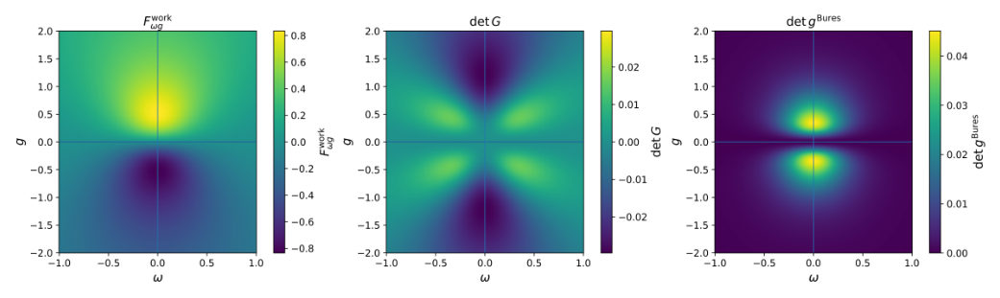
<figcaption class="paper-figure-caption"><b>Fig 1.</b> FIG. 1. Response geometry of the driven dissipative qubit in the control-parameter plane (ω, g) for fixed dissipation rate γ = 1 and stationary polarization parameter s = 0.75. Left: antisymmetric response tensor (work curvature) Fωg = χgω −χωg. The curvature changes sign across the symmetry line g = 0 and vanishes when the stationary state becomes aligned with the Hamiltonian eigenbasis. Center: determinant of the symmetric response tensor Gµν = 1</figcaption>
</figure>
</div>

<p><strong>Summary.</strong> The paper introduces a response-geometric framework for open quantum systems by decomposing the system's response tensor into symmetric and antisymmetric parts. This allows researchers to geometrically distinguish between local susceptibility (metric sector) and nonreciprocal effects like geometric work (curvature sector). The key finding is that this curvature arises naturally from the misalignment between the system's intrinsic Hamiltonian basis and the environment-induced pointer basis.</p>
<p><strong>Why it may be interesting.</strong> This work provides a powerful geometric tool to quantify non-reciprocal effects (like directed energy flow or geometric work) in open quantum systems, moving beyond standard equilibrium fluctuation theorems.</p>
<details>
<summary>Detailed structure</summary>
<p><strong>Main problem.</strong> Developing a response-geometric framework for open quantum systems by decomposing the stationary-state response tensor into symmetric and antisymmetric sectors.</p>
<p><strong>Main result.</strong> The theory establishes that geometric work emerges as a measurable signature of nonreciprocal response, extending fluctuation-response relations from equilibrium thermodynamics to non-equilibrium steady states.</p>
<p><strong>Method.</strong> Linear response theory is used to decompose the stationary-state response tensor into metric (symmetric) and curvature (antisymmetric) components.</p>
<p><strong>Model / system.</strong> The analysis uses open quantum systems, exemplified by a driven dissipative qubit under pure dephasing. The framework applies generally to systems whose dynamics are governed by competition between Hamiltonian evolution and environmental dissipation.</p>
<p><strong>Key observables.</strong> Local susceptibility (governed by the symmetric sector), geometric work curvature (from the antisymmetric sector), and state distinguishability (quantified by the Bures metric).</p>
<p><strong>Important parameters / regimes.</strong> Basis misalignment ($   heta$ or $g$), which quantifies the incompatibility between the Hamiltonian eigenbasis and the environment-selected pointer basis.</p>
<p><strong>Assumptions / limitations.</strong> The framework assumes that the stationary state can be parameterized by external control variables, allowing for a geometric description of response. It notes that full integrability (Kähler geometry) remains an open question.</p>
<p><strong>Figures summary.</strong> Figures illustrate the spatial organization and distinct nature of the determinants associated with the work curvature ($F$), susceptibility ($\det G$), and Bures metric ($\det g_{Bures}$) in parameter space.</p>
<p><strong>Paper structure.</strong> The paper develops the framework by decomposing the response tensor, showing how equilibrium recovers purely metric geometry (vanishing antisymmetric sector), and then applying this to non-equilibrium systems where both metric and symplectic structures coexist due to basis incompatibility.</p>
</details>
<details>
<summary>Abstract</summary>
<p>We develop a response-geometric framework for open quantum systems by decomposing the stationary-state response tensor into symmetric and antisymmetric sectors. The symmetric sector defines a metric-like response tensor governing local susceptibility, while the antisymmetric sector defines a curvature two-form associated with nonreciprocal response and geometric work. We show that the work curvature is precisely the antisymmetric component of the response tensor, establishing a fluctuation--response relation that extends the geometric structure of equilibrium thermodynamics to nonequilibrium steady states, and reveals a response geometry with both metric and symplectic sectors. In equilibrium, the antisymmetric sector vanishes by reciprocity, recovering the familiar metric geometry of thermodynamic response. Open quantum systems admit a broader structure in which reciprocal and nonreciprocal responses coexist on the same control manifold. We illustrate this with a driven dissipative qubit under pure dephasing, where finite curvature emerges from the misalignment between the Hamiltonian eigenbasis and the pointer basis selected by the environment, without requiring strong driving or engineered reservoirs. Comparison with the Bures metric shows that response geometry and information geometry characterize distinct properties of the stationary-state manifold: the former governs susceptibility and geometric work, the latter quantifies state distinguishability. Geometric work thus emerges as a measurable signature of nonreciprocal response in open quantum systems.</p>
</details>
<p><sub><a href="#top">↑ back to top</a></sub></p>

<p><a id="paper-2606.22405"></a></p>
<h3 id="quantum-otto-engine-with-decoupled-idle-levels-in-a-non-hermitian-xy-model"><a href="http://arxiv.org/abs/2606.22405v1">Quantum Otto engine with decoupled idle levels in a non-Hermitian XY model</a></h3>
<p><strong>Authors:</strong> Maimaitiyiming Tusun, Fang Zhao<br>
<strong>Type:</strong> theory · <strong>Category:</strong> statistical mechanics · <strong>PDF:</strong> <a href="https://arxiv.org/pdf/2606.22405v1">https://arxiv.org/pdf/2606.22405v1</a><br>
<strong>Analysis basis:</strong> full PDF text, analyzed in chunks
<strong>Topic relevance:</strong> <code>driven-dissipative phase transition</code> <strong>3/5</strong> · <code>exotic spin models in light-matter</code> <strong>3/5</strong> · <code>methods for driven-dissipative</code> <strong>3/5</strong> · <code>non-equilibrium dynamics</code> <strong>2/5</strong> · <code>non-equilibrium universality</code> <strong>2/5</strong> · <code>Keldysh / 2PI / non-Gaussian methods</code> <strong>1/5</strong> · <code>Kondo &amp; dissipative impurity</code> <strong>1/5</strong> · <code>analog quantum simulation</code> <strong>1/5</strong> · <code>correlated / nonlocal dissipation</code> <strong>1/5</strong></p>
<div class="figure-strip-hint">↔ Scroll figures horizontally</div>
<div class="paper-figures-scroll">
<figure class="paper-figure-card">
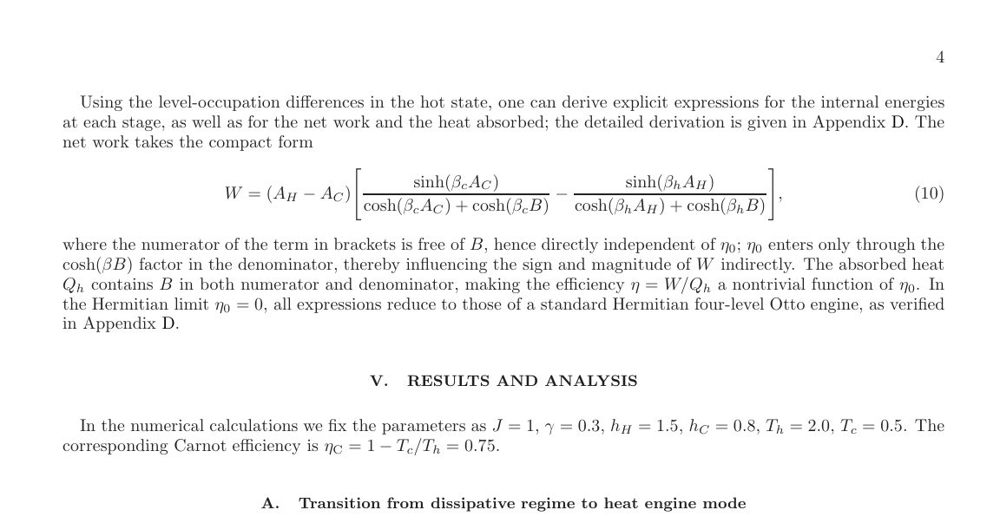
<figcaption class="paper-figure-caption"><b>Fig 1.</b> Figure 1 shows the net work W as a function of the non-Hermitian parameter η0. For small values of η0, W &lt; 0, and numerical verification yields Qh &gt; 0, Qc &gt; 0, confirming that the system operates in the dissipative regime. At a critical value ηc the net work vanishes, marking the transition point. For η0 above this critical value, W &gt; 0 and the system enters the heat engine regime. This bidirectional behavior is a direct consequence of the idle-level mechanism [32]: changing η0 tunes the idle-level gap B = 2J p</figcaption>
</figure>
<figure class="paper-figure-card">
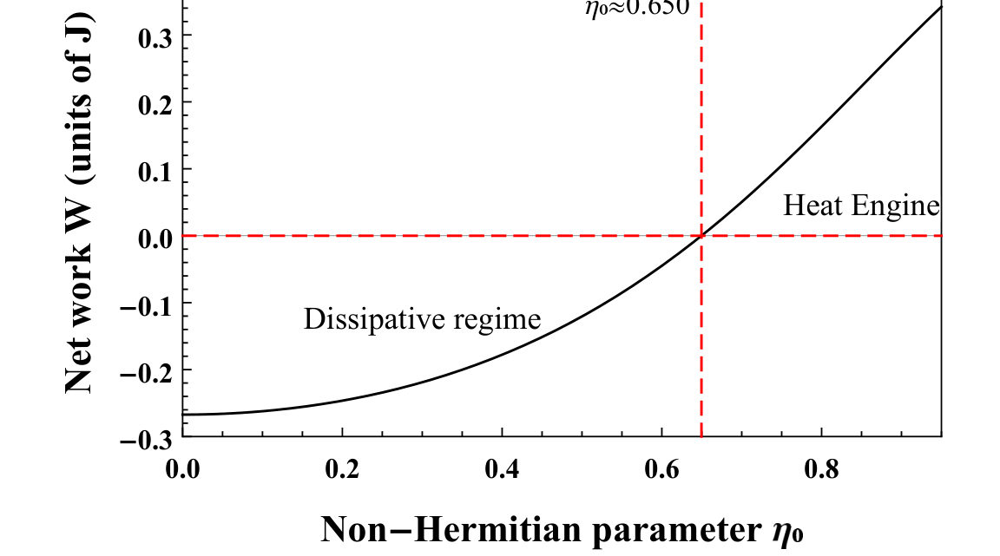
<figcaption class="paper-figure-caption"><b>Fig 2.</b> FIG. 1. Net work W (in units of J) versus the non-Hermitian parameter η0. The horizontal dashed line marks W = 0; the vertical dashed line indicates the critical value ηc ≈0.6496, with the dissipative regime on the left and the heat engine mode on the right. The inset shows the entropy production per cycle ∆Stot in the dissipative regime, which remains positive for all η0 &lt; ηc. Parameters: J = 1, γ = 0.3, hH = 1.5, hC = 0.8, Th = 2.0, Tc = 0.5.</figcaption>
</figure>
<figure class="paper-figure-card">
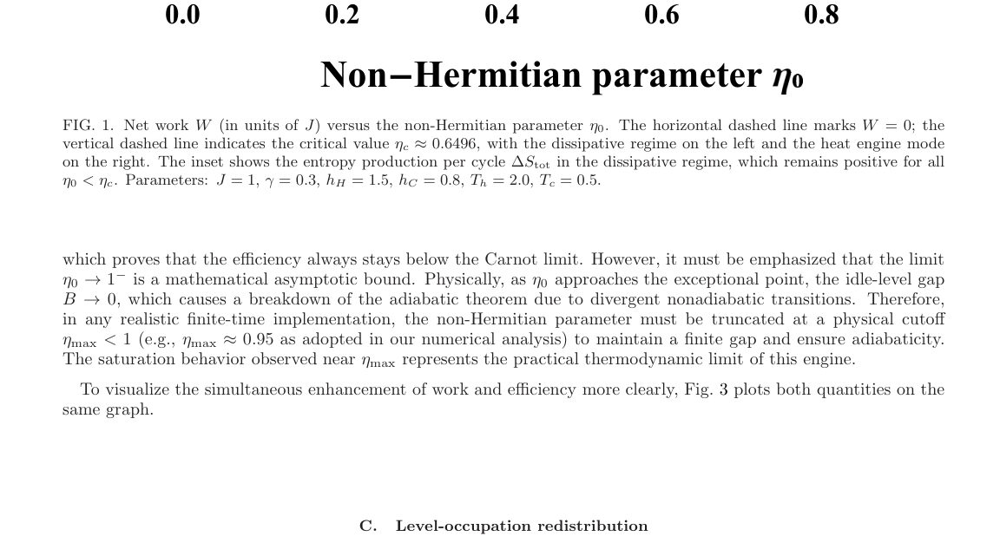
<figcaption class="paper-figure-caption"><b>Fig 3.</b> Figure 4 displays the idle-level occupation difference p3 −p4 in the hot and cold equilibrium states as a function of η0, clearly revealing the microscopic origin of the efficiency enhancement. As η0 grows, the occupation difference on the cold side drops much faster than that on the hot side. This asymmetric change widens the occupation-difference gap that drives Qh. Therefore, the redistribution of level occupations is the physical root of the efficiency boost and highlights the central role of idle levels in the non-Hermitian quantum heat engine.</figcaption>
</figure>
<figure class="paper-figure-card">
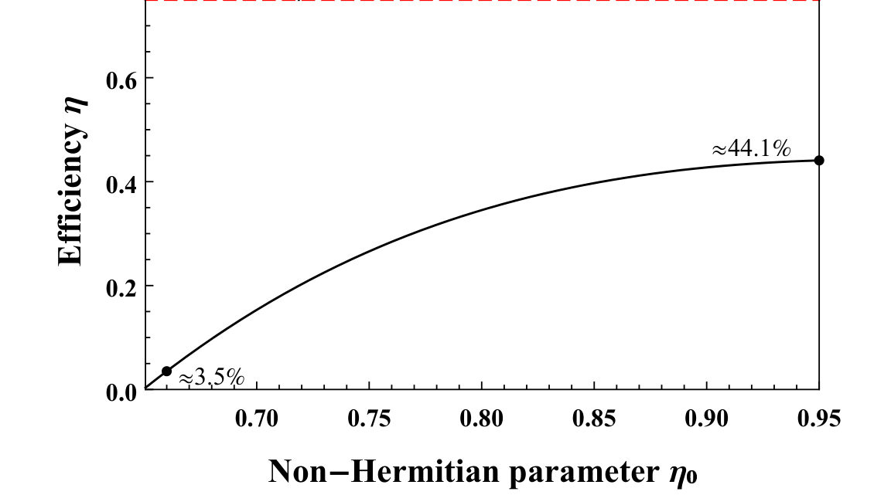
<figcaption class="paper-figure-caption"><b>Fig 4.</b> FIG. 2. Engine efficiency η versus η0. Black solid line: heat engine efficiency; red dashed line: Carnot limit ηC = 0.75. The efficiency rises from about 3.5% at η0 = 0.66 to 42.7% at η0 = 0.9, and approaches 44.15% as η0 →1−. Parameters are the same as in Fig. 1.</figcaption>
</figure>
<figure class="paper-figure-card">
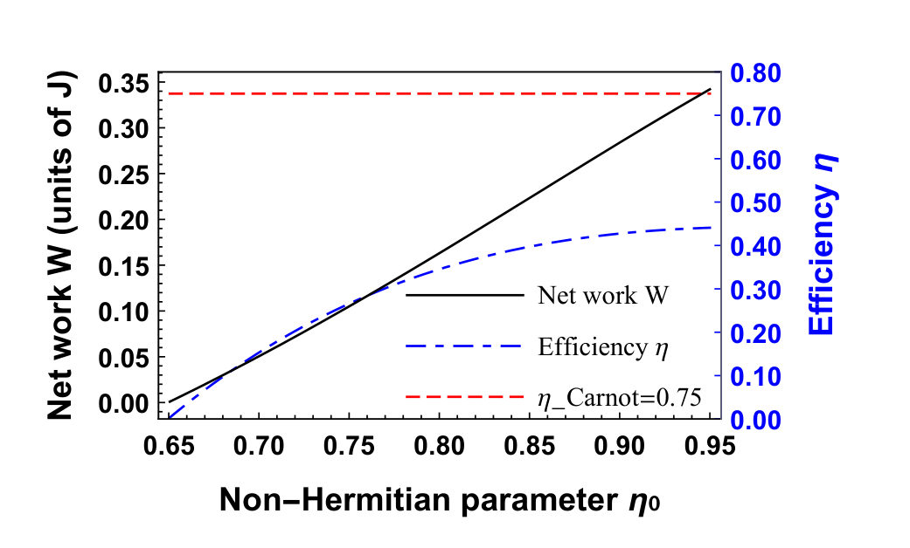
<figcaption class="paper-figure-caption"><b>Fig 5.</b> FIG. 3. Net work W (left axis, black solid line) and engine efficiency η (right axis, blue dashed line) as functions of η0. The red dashed line marks the Carnot efficiency ηC = 0.75. Inside the engine regime (η0 &gt; ηc), both quantities increase with η0. Parameters are the same as in Fig. 1.</figcaption>
</figure>
</div>

<p><strong>Summary.</strong> The authors analyze a quantum Otto cycle in a two-qubit non-Hermitian XY model, demonstrating that the system naturally possesses decoupled 'idle levels.' By tuning the non-Hermitian parameter ($\eta_0$), they show this idle-level mechanism allows for independent control over efficiency, driving the engine into an efficient heat engine regime and confirming non-Hermiticity as a powerful tool in quantum thermodynamics.</p>
<p><strong>Why it may be interesting.</strong> This work provides a concrete realization of an advanced quantum thermodynamics concept—the idle-level engine—using non-Hermiticity as a tunable resource to surpass standard thermodynamic limitations in spin models.</p>
<details>
<summary>Detailed structure</summary>
<p><strong>Main problem.</strong> The study investigates a quantum Otto cycle using an idle-level heat engine architecture realized within a physical spin model to demonstrate non-Hermiticity's role in controlling thermal machine performance.</p>
<p><strong>Main result.</strong> Tuning the non-Hermitian parameter ($\eta_0$) drives the system from a dissipative regime ($W<0$) into a genuine heat engine mode ($W>0$), simultaneously enhancing both output work and efficiency towards the Carnot limit.</p>
<p><strong>Method.</strong> The analysis employs the non-Hermitian canonical thermodynamic framework, calculating equilibrium properties using the biorthogonal eigenbasis for the four strokes of the Otto cycle.</p>
<p><strong>Model / system.</strong> The system is a two-qubit non-Hermitian XY model featuring a staggered imaginary magnetic field. The Hamiltonian naturally decouples into working levels (dependent on external fields) and idle levels (independent of external fields).</p>
<p><strong>Key observables.</strong> Net work ($W$), engine efficiency ($\eta = W/Q_h$), heat absorbed ($Q_h$), and the energy spectrum.</p>
<p><strong>Important parameters / regimes.</strong> The non-Hermitian parameter $\eta_0$ is the primary control knob, which must be kept within the PT-unbroken phase ($|\eta_0| < 1$).</p>
<p><strong>Assumptions / limitations.</strong> The work-efficiency synergy is demonstrated for the quasistatic Otto cycle; finite-time cycles are assumed to degrade performance. The adiabatic process requires $\eta_0$ to remain away from the exceptional point ($\eta_0 = 1$).</p>
<p><strong>Figures summary.</strong> Figures illustrate the transition of net work ($W$) from negative (dissipative) to positive (engine) as $\eta_0$ increases, and show that efficiency ($\eta$) enhances monotonically with $\eta_0$. Figure 4 details how idle-level occupation differences modulate absorbed heat ($Q_h$).</p>
<p><strong>Paper structure.</strong> The paper first introduces the non-Hermitian Hamiltonian and its energy level decoupling. It then applies the non-Hermitian canonical framework to calculate thermodynamic quantities for the four strokes of the Otto cycle, culminating in demonstrating the idle-level control mechanism that enhances work and efficiency.</p>
</details>
<details>
<summary>Abstract</summary>
<p>We study a quantum Otto cycle in a two-qubit non-Hermitian XY model with a staggered imaginary magnetic field. The energy spectrum of this system naturally decouples into a pair of working levels that depend on the external field and a pair of idle levels that are completely independent of it, thereby providing the first concrete microscopic realization of the idle-level quantum heat engine architecture proposed by de~Oliveira and Jonathan [Phys. Rev. E 104, 044133 (2021)] in a physical spin model. Tuning the non-Hermitian parameter eta_0 drives a continuous transition from a dissipative regime with negative net work and net heat absorption from the hot reservoir into a genuine heat engine mode, while simultaneously enhancing both output work and efficiency. As eta_0 increases within the stable PT-unbroken phase, the engine efficiency rises significantly, reaching a substantial fraction of the Carnot limit. This effect originates from the compression of the idle-level gap, which redistributes the level occupation weights in the hot and cold equilibrium states and thereby modulates the absorbed heat. The numerator of the net work expression is independent of eta_0, but the denominator depends on eta_0 indirectly through hyperbolic cosine functions -- this is the mathematical root of the idle-level control mechanism. We provide a detailed analysis of the robustness of these findings against parameter variations, a critical comparison of the non-Hermitian control with the Hermitian limit, and a concrete experimental proposal for trapped-ion quantum simulators. Our results demonstrate that non-Hermiticity serves as an indispensable tool for steering both the operation mode and the performance of a quantum engine.</p>
</details>
<p><sub><a href="#top">↑ back to top</a></sub></p>

<p><a id="paper-2606.22273"></a></p>
<h3 id="collective-mpemba-type-relaxation-in-degenerate-bosonic-modes-coupled-to-a-common-thermal-reservoir"><a href="http://arxiv.org/abs/2606.22273v1">Collective Mpemba-Type Relaxation in Degenerate Bosonic Modes Coupled to a Common Thermal Reservoir</a></h3>
<p><strong>Authors:</strong> I. M. de Araújo, H. Sanchez, L. F. Alves da Silva, L. F. Alves da Silva, Norton G. de Almeida, M. H. Y. Moussa<br>
<strong>Type:</strong> theory · <strong>Category:</strong> statistical mechanics · <strong>PDF:</strong> <a href="https://arxiv.org/pdf/2606.22273v1">https://arxiv.org/pdf/2606.22273v1</a><br>
<strong>Analysis basis:</strong> full PDF text, analyzed in chunks
<strong>Topic relevance:</strong> <code>correlated / nonlocal dissipation</code> <strong>3/5</strong> · <code>methods for driven-dissipative</code> <strong>3/5</strong> · <code>non-equilibrium dynamics</code> <strong>3/5</strong> · <code>Keldysh / 2PI / non-Gaussian methods</code> <strong>2/5</strong> · <code>driven-dissipative phase transition</code> <strong>2/5</strong> · <code>analog quantum simulation</code> <strong>1/5</strong> · <code>entanglement &amp; information structure</code> <strong>1/5</strong> · <code>non-equilibrium universality</code> <strong>1/5</strong></p>
<div class="figure-strip-hint">↔ Scroll figures horizontally</div>
<div class="paper-figures-scroll">
<figure class="paper-figure-card">
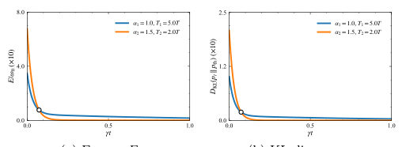
<figcaption class="paper-figure-caption"><b>Fig 1.</b> Figure 1. Weak-coupling Markovian Mpemba scenario with a single clean crossing. Parameters: ω0 = 10, γ = 1, (α1, T1) = (1.0, 5.0T), and (α2, T2) = (1.5, 2.0T). The stronger initial displacement of state 2 accelerates the short-time collective relaxation and produces the same crossing in both diagnostics.</figcaption>
</figure>
<figure class="paper-figure-card">
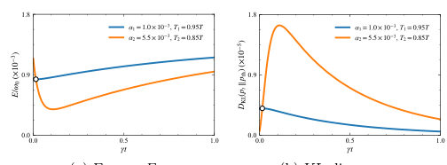
<figcaption class="paper-figure-caption"><b>Fig 2.</b> Figure 2. Weak-coupling Markovian anti-Mpemba-like in- version for ω0 = 10, γ = 1, (α1, T1) = (10−3, 0.95T), and (α2, T2) = (5.5 × 10−3, 0.85T). Although both preparations are initially colder than the bath, the larger coherent compo- nent of state 2 produces an early-time reordering in both the energy and the KL divergence.</figcaption>
</figure>
<figure class="paper-figure-card">

<figcaption class="paper-figure-caption"><b>Fig 3.</b> Figure 3. Weak-coupling Markovian criterion dependence. Parameters: ω0 = 1, γ = 0.1, (α1, T1) = (0.50, 1.1T), and (α2, T2) = (0.75, 0.7T). The energy ordering never inverts, whereas the KL divergence shows an early crossing, demon- strating that the identification of the “faster” preparation de- pends on the chosen diagnostic.</figcaption>
</figure>
<figure class="paper-figure-card">

<figcaption class="paper-figure-caption"><b>Fig 4.</b> Figure 4. Underdamped collective Caldeira–Leggett dynam- ics for M = 10, ω0 = 20, γ = 1, T = 1.0, (α1, T1) = (6i, 1.0), and (α2, T2) = (−5.0, 20.0T). Because γM &lt; ω0, the damped rotation in the quadrature plane produces three crossings in both the energy E and the KL divergence. The white markers identify the crossing times.</figcaption>
</figure>
<figure class="paper-figure-card">

<figcaption class="paper-figure-caption"><b>Fig 5.</b> Figure 5. Lorentzian non-Markovian collective relaxation for M = 30, ω0 = 10, γ0 = 1, T = 1.0, λ/γ0 = 0.2, ∆/γ0 = 3.5, (α1, T1) = (0.45, 18.0T), and (α2, T2) = (1.20, 10.0T). The main panels show the overall delayed transfer of hierarchy, while the inset resolves three crossings inside a narrow early- time window generated by reservoir memory.</figcaption>
</figure>
</div>

<p><strong>Summary.</strong> This paper analyzes collective Mpemba-type relaxation in degenerate bosonic modes coupled to a thermal bath. By examining weak-coupling Markovian, strong-coupling Caldeira-Leggett, and non-Markovian limits, the authors show that the coupling structure dictates distinct decay channels. The results highlight how reservoir memory and internal dynamics can lead to complex, multiple transient reorderings of relaxation timescales.</p>
<p><strong>Why it may be interesting.</strong> This work provides a detailed theoretical framework for understanding how collective dissipation in many-body bosonic systems can lead to non-trivial, history-dependent relaxation phenomena like the Mpemba effect, which is crucial for quantum thermodynamics.</p>
<details>
<summary>Detailed structure</summary>
<p><strong>Main problem.</strong> The study investigates collective Mpemba-type relaxation, which involves the crossing of energy decay timescales, in a system of degenerate bosonic modes coupled to a common thermal reservoir.</p>
<p><strong>Main result.</strong> The coupling structure leads to distinct relaxation channels (incoherent vs. coherent), and the specific physical regime (Markovian vs. non-Markovian) dictates whether crossings are simple exponentials or exhibit complex transient reorderings.</p>
<p><strong>Method.</strong> The analysis employs mean-field reduction techniques to derive effective master equations for different coupling regimes, comparing energy decay ($\Delta E(t)$) with full state diagnostics like the Kullback-Leibler divergence.</p>
<p><strong>Model / system.</strong> The system consists of $M$ degenerate bosonic modes coupled via an interaction Hamiltonian to a common thermal reservoir. The dynamics are analyzed across weak-coupling Markovian, strong-coupling Caldeira-Leggett, and non-Markovian limits.</p>
<p><strong>Key observables.</strong> Energy difference $\Delta E(t)$, Kullback-Leibler (KL) divergence ($ ext{DKL}$), relaxation rates ($\gamma$ vs. $M\gamma$), and the Mpemba crossing time ($t_	imes$).</p>
<p><strong>Important parameters / regimes.</strong> Number of modes ($M$), coupling strengths, reservoir memory effects (Lorentzian spectrum), and initial state preparation parameters ($\Delta n_0$, $\Delta \alpha$).</p>
<p><strong>Assumptions / limitations.</strong> The analysis relies heavily on mean-field approximations derived by tracing out $M-1$ modes from the full system Hamiltonian.</p>
<p><strong>Figures summary.</strong> Figures illustrate clean Mpemba crossings, anti-Mpemba inversions, and complex transient reorderings showing multiple crossings in both energy and KL divergence diagnostics across different coupling regimes.</p>
<p><strong>Paper structure.</strong> The paper systematically progresses by first establishing the weak-coupling Markovian result (two distinct decay channels), then extending to the Caldeira-Leggett regime (introducing quadrature dynamics), and finally incorporating reservoir memory effects via non-Markovian kernels.</p>
</details>
<details>
<summary>Abstract</summary>
<p>We investigate collective Mpemba-type relaxation in a degenerate family of bosonic modes coupled to a common thermal reservoir. Starting from a fully symmetric M-mode description and employing a representative mean-field reduction, we derive effective master equations for weak-coupling Markovian, strong-coupling Caldeira-Leggett, and weak-coupling non-Markovian regimes. In the weak-coupling Markovian limit, relaxation separates into an incoherent thermal channel decaying at rate gamma and a collective coherent channel decaying at rate M gamma, yielding an explicit Mpemba crossing time determined by the initial-state preparation. In the strong-coupling Caldeira-Leggett regime, transient quadrature dynamics enriches the relaxation pattern, delaying crossings in the overdamped sector and generating multiple crossings in the underdamped sector. In the non-Markovian regime, reservoir memory reshapes the same channel-competition mechanism through time-dependent decay rates and a Lamb shift, producing delayed and clustered crossing windows. Numerical results based on the energy and the Kullback-Leibler divergence reveal Mpemba and anti-Mpemba behavior, criterion dependence, and multiple transient reorderings induced by collective coherence, quadrature dynamics, and reservoir memory.</p>
</details>
<p><sub><a href="#top">↑ back to top</a></sub></p>

<p><a id="paper-2606.22092"></a></p>
<h3 id="effect-of-rewiring-for-a-sandpile-model-on-a-directed-network"><a href="http://arxiv.org/abs/2606.22092v1">Effect of rewiring for a sandpile model on a directed network</a></h3>
<p><strong>Authors:</strong> Alejandro Zamorano, Víctor Muñoz<br>
<strong>Type:</strong> theory · <strong>Category:</strong> statistical mechanics · <strong>PDF:</strong> <a href="https://arxiv.org/pdf/2606.22092v1">https://arxiv.org/pdf/2606.22092v1</a><br>
<strong>Analysis basis:</strong> full PDF text, analyzed in chunks
<strong>Topic relevance:</strong> <code>driven-dissipative phase transition</code> <strong>3/5</strong> · <code>non-equilibrium universality</code> <strong>3/5</strong> · <code>analog quantum simulation</code> <strong>2/5</strong> · <code>methods for driven-dissipative</code> <strong>2/5</strong> · <code>non-equilibrium dynamics</code> <strong>2/5</strong> · <code>Frenkel-Kontorova</code> <strong>1/5</strong> · <code>Keldysh / 2PI / non-Gaussian methods</code> <strong>1/5</strong> · <code>correlated / nonlocal dissipation</code> <strong>1/5</strong> · <code>entanglement &amp; information structure</code> <strong>1/5</strong></p>
<div class="figure-strip-hint">↔ Scroll figures horizontally</div>
<div class="paper-figures-scroll">
<figure class="paper-figure-card">

<figcaption class="paper-figure-caption"><b>Fig 1.</b> Figure 1: Network representation of the BTW model, where each node i delivers energy to node i + 1, and node n = 6 releases energy from the system.</figcaption>
</figure>
<figure class="paper-figure-card">

<figcaption class="paper-figure-caption"><b>Fig 2.</b> Figure 3: Graphical representation of the initial adjacency matrix (6).</figcaption>
</figure>
<figure class="paper-figure-card">

<figcaption class="paper-figure-caption"><b>Fig 3.</b> Figure 4: Rewired network configuration according to the M2 matrix in Eq. (7), after two rewirings.</figcaption>
</figure>
<figure class="paper-figure-card">

<figcaption class="paper-figure-caption"><b>Fig 4.</b> Figure 5: Energy of the system for the non-rewired 1D case (linear chain) as a function of iteration time t, showing the transition from the transient to the stationary state.</figcaption>
</figure>
<figure class="paper-figure-card">

<figcaption class="paper-figure-caption"><b>Fig 5.</b> Figure 6: Number of grains at the i-th state at the stationary state for the linear chain, with no rewiring.</figcaption>
</figure>
</div>

<p><strong>Summary.</strong> This work analyzes how modifying the underlying connectivity of a sandpile model—by rewiring its directed network—alters its statistical behavior. The authors find that 1D structures exhibit sharp, critical transitions in load distribution, whereas 2D structures show smoother changes. This highlights the sensitivity of transport properties to network topology and suggests the Gini coefficient as a powerful diagnostic tool for such transitions.</p>
<p><strong>Why it may be interesting.</strong> While focused on classical SOC dynamics, the study's use of network topology modification and critical transitions based on global measures like the Gini coefficient provides transferable concepts for understanding non-equilibrium phase transitions in complex quantum systems or engineered quantum networks.</p>
<details>
<summary>Detailed structure</summary>
<p><strong>Main problem.</strong> The study investigates how systematically rewiring a directed network affects the avalanche statistics and structural properties of the sandpile model.</p>
<p><strong>Main result.</strong> In 1D, rewirings cause a sharp transition in load inequality (Gini coefficient) at $\sim 85\%$ rewiring. In contrast, 2D systems show a smoother change, maintaining power-law energy release even when fully rewired.</p>
<p><strong>Method.</strong> The authors simulate the Bak-Tang-Wiesenfeld sandpile model on networks that are systematically modified by controlled rewiring algorithms to ensure continuous energy dissipation.</p>
<p><strong>Model / system.</strong> The system is the BTW sandpile model applied to directed graphs, initially starting as a 1D linear chain and extended to 2D lattices. The process involves iteratively replacing network links while maintaining an acyclic structure (DAG).</p>
<p><strong>Key observables.</strong> Gini coefficient of load distribution, avalanche energy PDF ($\Delta E$), betweenness centrality, average shortest path length $\langle L 
angle$, and the critical rewiring proportion ($f_c^r$).</p>
<p><strong>Important parameters / regimes.</strong> The fraction of rewired links ($f_r$) is the primary control parameter, analyzed in both 1D and 2D geometries.</p>
<p><strong>Assumptions / limitations.</strong> Rewiring rules are strictly enforced to guarantee that energy can always leave the system, preventing trapped energy or network breakage.</p>
<p><strong>Figures summary.</strong> Figures illustrate the evolution of total energy, stationary grain distributions, and the PDF of energy release events as a function of rewiring steps ($n_R$ or $f_r$). The Gini coefficient vs. $f_r$ plots highlight sharp (1D) versus smooth (2D) transitions.</p>
<p><strong>Paper structure.</strong> The paper systematically analyzes the sandpile dynamics by first establishing the controlled rewiring process, then comparing 1D and 2D results across various metrics (Gini, $\langle L 
angle$, centrality), culminating in a discussion of size effects and the utility of the Gini coefficient as a diagnostic tool.</p>
</details>
<details>
<summary>Abstract</summary>
<p>Several studies have considered sandpile dynamics not over regular grids, but over networks. In this case, avalanches redistribute grains not between neighboring sites in a geometrical sense, but between connected sites, in a topological sense. However, depending on how nodes are connected, grains may never leave the system, preventing energy release. In this work, we study the simplest case, the BTW model in one and two dimensions, rewiring the nodes so that at every rewiring step, the energy release is always possible, and study avalanche statistics as a function of rewiring. In the 1D case, a transition is observed in the Gini coefficient of the load distribution per node at about 85% the number of possible rewirings, a transition which is not evident with other measures, such as the size distribution of avalanches or the mean distance between nodes in the network. In the 2D case, energy release follows a power law even when the grid is fully rewired, while the Gini coefficient, unlike the 1D case, decreases at a steady rate, with a smoother transition. The effect of network size N is studied, finding that there is a transition for the Gini coefficient at the thermodynamic limit N \to \infty for both the 1D and 2D cases, transition which is also observed in the betweenness centrality, but not in other topological measures. Finally, the dependence of the results with the load per rewiring iteration, and the avalanche threshold is studied.</p>
</details>
<p><sub><a href="#top">↑ back to top</a></sub></p>

<p><a id="paper-2606.23303"></a></p>
<h3 id="harnessing-josephson-shapiro-physics-to-verify-interlayer-exciton-superfluidity"><a href="http://arxiv.org/abs/2606.23303v1">Harnessing Josephson-Shapiro physics to verify interlayer exciton superfluidity</a></h3>
<p><strong>Authors:</strong> Filippo Pascucci, Alexander R. Hamilton, Milorad V. Milosevic, David Neilson<br>
<strong>Type:</strong> both · <strong>Category:</strong> other · <strong>PDF:</strong> <a href="https://arxiv.org/pdf/2606.23303v1">https://arxiv.org/pdf/2606.23303v1</a><br>
<strong>Analysis basis:</strong> full PDF text, analyzed in chunks
<strong>Topic relevance:</strong> <code>analog quantum simulation</code> <strong>3/5</strong> · <code>driven-dissipative phase transition</code> <strong>3/5</strong> · <code>methods for driven-dissipative</code> <strong>3/5</strong> · <code>non-equilibrium dynamics</code> <strong>2/5</strong> · <code>Keldysh / 2PI / non-Gaussian methods</code> <strong>1/5</strong> · <code>correlated / nonlocal dissipation</code> <strong>1/5</strong> · <code>correlated cavity matter</code> <strong>1/5</strong> · <code>non-equilibrium universality</code> <strong>1/5</strong></p>
<div class="figure-strip-hint">↔ Scroll figures horizontally</div>
<div class="paper-figures-scroll">
<figure class="paper-figure-card">

<figcaption class="paper-figure-caption"><b>Fig 1.</b> Figure 1. Our proposed S-S′-S device and measurement setup. Top (green) layer is n-doped, and bottom (red) layer is p-doped. Bulk layer width is W, Dayem bridge has width w and length L. AC current source I, voltage drop across the bridge V , ammeter A. Drive current Idrive in the top layer induces a drag current Idrag in the bottom layer.</figcaption>
</figure>
<figure class="paper-figure-card">

<figcaption class="paper-figure-caption"><b>Fig 2.</b> Figure 2. Critical Josephson current eIJJ c as a function of the interparticle spacing r0 for DBG. The double bilayer graphene is separated by an insulator of dielectric constant ε and thick- ness d.</figcaption>
</figure>
<figure class="paper-figure-card">

<figcaption class="paper-figure-caption"><b>Fig 3.</b> Figure 4. Voltage-density characteristics for AC current (eIX,AC = 0.2 µA, ωAC = 50 GHz), for DC currents: eIX,DC = 0.4 µA (blue line) and eIX,DC = 0.6 µA (green line). Inset: current width of the first step ∆I as a function of density for eIX,DC = 0.4 µA.</figcaption>
</figure>
<figure class="paper-figure-card">

<figcaption class="paper-figure-caption"><b>Fig 4.</b> Figure 3. Shapiro steps in the Dayem bridge. For all curves eIX,AC = 0.2 µA and ωAC = 50 GHz. (a) I-V characteristics for different r0, as labeled. V is the time voltage average and IX,DC is the injected exciton direct current component. (b) V (t) at values of eIX,DC indicated by the circled numbers for r0 = 2.85a∗ B. (c) V (t) at the start of the first step for the values of r0, as labeled.</figcaption>
</figure>
<figure class="paper-figure-card">

<figcaption class="paper-figure-caption"><b>Fig 5.</b> Figure 5. (a) Critical velocity vc and (b) healing length ξh at zero temperature as functions of the average interparticle distance r0. Blue lines: DBG, green lines: TMDs. Solid lines: interlayer distance d = 1 nm, dashed lines: d = 2 nm. In panel (b), the black dashed line indicates the limiting condition for S-S′-S at zero temperature: [L = 30 nm]/3.5. Inset: zoom of minimum in healing length near the onset density in DBG for d = 1 nm.</figcaption>
</figure>
</div>

<p><strong>Summary.</strong> This paper proposes using Shapiro steps in an excitonic Josephson junction as a direct method to verify superfluidity in electron-hole bilayers. By analyzing double-bilayer graphene and TMDs, the authors predict clear voltage plateaus that signal macroscopic phase coherence. This approach allows for mapping out the BCS-BEC crossover physics in these neutral quantum systems.</p>
<p><strong>Why it may be interesting.</strong> The work bridges concepts from superconductivity (Josephson junctions) into the realm of excitonic quantum materials, providing a concrete, measurable diagnostic tool for exotic many-body phases like exciton superfluids.</p>
<details>
<summary>Detailed structure</summary>
<p><strong>Main problem.</strong> The primary challenge is obtaining direct, unambiguous evidence for zero-magnetic-field exciton superfluidity in electrically neutral electron-hole bilayers.</p>
<p><strong>Main result.</strong> The authors propose using Shapiro steps in a Josephson junction formed by an excitonic Dayem bridge to directly probe phase coherence. They show this signature can be observed across the full BCS-BEC crossover regime in double-bilayer graphene (DBG).</p>
<p><strong>Method.</strong> The theoretical framework models the system as a modified Josephson junction, deriving current-phase relations and predicting observable Shapiro plateaus from combined DC+AC driving currents.</p>
<p><strong>Model / system.</strong> The study focuses on exciton bilayers, specifically double-bilayer graphene (DBG) and transition-metal dichalcogenides (TMDs). The physics is analyzed using Josephson junction dynamics adapted for neutral excitons in a Dayem bridge geometry.</p>
<p><strong>Key observables.</strong> Resolvable Shapiro plateaus in the I-V characteristics; nonmonotonic evolution of the first step width as density is tuned across the BCS-BEC crossover.</p>
<p><strong>Important parameters / regimes.</strong> Particle density ($n$), interlayer distance ($d$), interparticle spacing ($r_0$), and the ratio governing the single-valued current-phase relation ($\xi_h \gtrsim L/3.5$).</p>
<p><strong>Assumptions / limitations.</strong> The junction is modeled in the overdamped limit, neglecting capacitance; geometric amplification ($\alpha = W/w \gg 1$) is assumed.</p>
<p><strong>Figures summary.</strong> Figure 2 shows the critical Josephson current ($I_{JJ}^c$) dependence on interparticle spacing for DBG. Figure 3 illustrates $I$-$V$ characteristics showing Shapiro steps, and Figure 4 demonstrates step visibility via density tuning.</p>
<p><strong>Paper structure.</strong> The paper first establishes the physical problem (probing neutral superfluidity) and proposes the Josephson junction diagnostic. It then develops the theoretical model using coupled equations for current balance and voltage dynamics. Finally, it presents results comparing DBG and TMDs, highlighting how Shapiro steps confirm superfluidity signatures across density regimes.</p>
</details>
<details>
<summary>Abstract</summary>
<p>Obtaining definitive evidence for zero-magnetic-field exciton superfluidity in electron-hole bilayers remains a longstanding challenge because the condensate is electrically neutral and its phase coherence is difficult to probe directly. We propose a direct test based on Shapiro steps in a Dayem-bridge excitonic Josephson junction. We predict clearly resolvable Shapiro plateaus in experimentally accessible current and voltage regimes for double-bilayer graphene and, in the low-density regime, double-layer transition-metal dichalcogenides. Moreover, by tuning the density across the BCS-BEC crossover we show that the Shapiro response acquires a distinct nonmonotonic evolution. This is determined by the nonmonotonic behavior of the healing length in the crossover from bosonic to fermionic excitations. Observation of these signatures would provide direct evidence of exciton superfluidity and establish exciton bilayers as a platform for neutral Josephson devices.</p>
</details>
<p><sub><a href="#top">↑ back to top</a></sub></p>

<p><a id="paper-2606.23598"></a></p>
<h3 id="quantum-geometry-driven-finite-momentum-exciton-fluctuations-in-flat-band-systems"><a href="http://arxiv.org/abs/2606.23598v1">Quantum Geometry Driven Finite-Momentum Exciton Fluctuations in Flat-Band Systems</a></h3>
<p><strong>Authors:</strong> Yi-Chun Hung, Xiaoting Zhou, Arun Bansil<br>
<strong>Type:</strong> theory · <strong>Category:</strong> statistical mechanics · <strong>PDF:</strong> <a href="https://arxiv.org/pdf/2606.23598v1">https://arxiv.org/pdf/2606.23598v1</a><br>
<strong>Analysis basis:</strong> full PDF text, analyzed in chunks
<strong>Topic relevance:</strong> <code>Keldysh / 2PI / non-Gaussian methods</code> <strong>3/5</strong> · <code>analog quantum simulation</code> <strong>3/5</strong> · <code>driven-dissipative phase transition</code> <strong>2/5</strong> · <code>methods for driven-dissipative</code> <strong>2/5</strong> · <code>Frenkel-Kontorova</code> <strong>1/5</strong> · <code>correlated / nonlocal dissipation</code> <strong>1/5</strong> · <code>correlated cavity matter</code> <strong>1/5</strong> · <code>non-equilibrium dynamics</code> <strong>1/5</strong> · <code>non-equilibrium universality</code> <strong>1/5</strong></p>
<div class="figure-strip-hint">↔ Scroll figures horizontally</div>
<div class="paper-figures-scroll">
<figure class="paper-figure-card">

<figcaption class="paper-figure-caption"><b>Fig 1.</b> FIG. 1. Schematic diagrams for (a) the electronic structure of the flat band in our setup and (b) the exciton-induced magnetic response. Hz is the out-of-plane Zeeman field with the corresponding energy splitting 2δE. ⃗ M⊥is the in-plane magnetization, which is proportional to the order parameter of the EI phase, ∆.</figcaption>
</figure>
<figure class="paper-figure-card">

<figcaption class="paper-figure-caption"><b>Fig 2.</b> FIG. 2. Mean-field critical temperature TMF (black solid line), and the critical temperature for finite-momentum su- perfluid density fluctuation TFMSDF (black dashed line), and the BKT transition temperatures TBKT for different values of K0 (colored lines) in the unit of δE/kB as a function of the dimensionless interaction strength 2δE/gc.</figcaption>
</figure>
<figure class="paper-figure-card">

<figcaption class="paper-figure-caption"><b>Fig 3.</b> FIG. 3. A schematic diagram showing the energies of amplitude  λ+(q)  and phase  λ−(q)  fluctuations in the finite-momentum superfluid density fluctuation state, where T &lt; TFMSDF. Here, Λ is the momentum cutoff. The negative kinetic coefficient favors amplitude fluctuations with a finite momentum. However, the ground state remains as λ+(q) &gt; 0 within the cutoff.</figcaption>
</figure>
</div>

<p><strong>Summary.</strong> This work theoretically establishes that the intrinsic quantum geometry of flat-band lattices can drive an excitonic insulator phase. By analyzing fluctuations using a Ginzburg-Landau framework, the authors predict a novel Finite-Momentum Superfluid Density Fluctuation (FMSDF) state under strong interactions. This suggests that geometric constraints dictate dynamic collective electronic behavior in materials like COFs.</p>
<p><strong>Why it may be interesting.</strong> It provides a concrete theoretical link between geometric properties (quantum metric) of electronic bands and emergent macroscopic quantum phases (excitonic insulators/superfluids), which is highly relevant for understanding correlated materials.</p>
<details>
<summary>Detailed structure</summary>
<p><strong>Main problem.</strong> The study aims to theoretically demonstrate a purely quantum-geometry-driven excitonic insulator (EI) phase and analyze its associated superfluid fluctuations in flat-band systems.</p>
<p><strong>Main result.</strong> Strong interactions induce a negative effective kinetic coefficient for the amplitude mode, causing softest fluctuations to shift to finite momentum, leading to a Finite-Momentum Superfluid Density Fluctuation (FMSDF) state.</p>
<p><strong>Method.</strong> The analysis employs mean-field theory on an effective Ginzburg-Landau free energy derived from path integrals and Hubbard-Stratonovich transformations.</p>
<p><strong>Model / system.</strong> The system models excitons confined to lattice-geometry-induced flat bands (e.g., kagome, Lieb lattices) in a tight-binding model subjected to an out-of-plane Zeeman field.</p>
<p><strong>Key observables.</strong> Coherence length ($\xi_c$), critical temperatures ($T_{	ext{MF}}$, $T_{	ext{BKT}}$), and the periodic modulation of in-plane magnetization fluctuations (FMSDF).</p>
<p><strong>Important parameters / regimes.</strong> Dimensionless interaction strength ($2\delta E/gc$), quantum metric components, and Zeeman splitting ($\delta E$).</p>
<p><strong>Assumptions / limitations.</strong> The system is assumed to be in the low-energy flat-band subspace, and SOC is negligible compared to the Zeeman field.</p>
<p><strong>Figures summary.</strong> Figures illustrate electronic structure with Zeeman splitting and exciton-induced magnetic response; Figure 2 compares $T_{	ext{MF}}$, $T_{	ext{FMSDF}}$, and $T_{	ext{BKT}}$ versus interaction strength.</p>
<p><strong>Paper structure.</strong> The paper systematically derives the effective action for the order parameter using auxiliary fields, analyzes fluctuations by diagonalizing the resulting quadratic action into amplitude and phase modes, and finally connects these fluctuations to observable magnetic responses.</p>
</details>
<details>
<summary>Abstract</summary>
<p>Quantum geometry is instrumental in stabilizing exotic phenomena in systems ranging from topological insulators to superconductors. In dispersionless flat bands, where the kinetic energy is quenched, the quantum metric emerges as the fundamental driver of macroscopic collective phenomena. Here, we theoretically demonstrate that lattice-geometry-induced flat bands, such as those in kagome and Lieb lattices, provide a fertile platform for realizing a purely quantum-geometry-driven excitonic insulator (EI) phase. By applying an out-of-plane Zeeman field to lift spin degeneracy without spin-orbit coupling, we establish a Ginzburg-Landau framework in which the electron-hole wavefunction-overlap directly maps the flat-band quantum metric onto the macroscopic free energy. This mapping plays a key role in both the EI and the associated superfluid phases, with the coherence length and phase stiffness emerging directly from the quantum metric. Our analysis reveals that under strong interactions, the quantum metric induces a negative effective kinetic coefficient for the amplitude mode. Rather than destabilizing the uniform condensate, this softens the amplitude fluctuations at a finite momentum, giving rise to a finite-momentum superfluid density fluctuation (FMSDF) state. This state is observable as a periodically modulated magnitude of in-plane magnetization fluctuations. Our findings establish a rigorous link between flat-band quantum geometry and dynamic collective excitonic states, with promising pathways for realization in covalent-organic frameworks (COFs).</p>
</details>
<p><sub><a href="#top">↑ back to top</a></sub></p>

<p><a id="paper-2606.22733"></a></p>
<h3 id="a-single-electron-double-quantum-dot-with-rashba-spin-orbit-interaction-as-a-working-substance-for-heat-machines"><a href="http://arxiv.org/abs/2606.22733v1">A single-electron double quantum dot with Rashba spin-orbit interaction as a working substance for heat machines</a></h3>
<p><strong>Authors:</strong> Ivan Romualdo de Oliveira, Vinícius N. A. Lula-Rocha, Moises Rojas<br>
<strong>Type:</strong> theory · <strong>Category:</strong> statistical mechanics · <strong>PDF:</strong> <a href="https://arxiv.org/pdf/2606.22733v1">https://arxiv.org/pdf/2606.22733v1</a><br>
<strong>Analysis basis:</strong> full PDF text, analyzed in chunks
<strong>Topic relevance:</strong> <code>spintronics-quantum-optics interface</code> <strong>3/5</strong> · <code>Kondo &amp; dissipative impurity</code> <strong>2/5</strong> · <code>non-equilibrium dynamics</code> <strong>2/5</strong> · <code>Keldysh / 2PI / non-Gaussian methods</code> <strong>1/5</strong> · <code>analog quantum simulation</code> <strong>1/5</strong> · <code>correlated / nonlocal dissipation</code> <strong>1/5</strong> · <code>driven-dissipative phase transition</code> <strong>1/5</strong> · <code>exotic spin models in light-matter</code> <strong>1/5</strong> · <code>methods for driven-dissipative</code> <strong>1/5</strong> · <code>non-equilibrium universality</code> <strong>1/5</strong></p>
<div class="figure-strip-hint">↔ Scroll figures horizontally</div>
<div class="paper-figures-scroll">
<figure class="paper-figure-card">

<figcaption class="paper-figure-caption"><b>Fig 1.</b> Figure 1. Heat exchanges Qh and Qc, and total work W, as functions of the Rashba coupling αh. The fixed parameters are ∆h = ∆c = 0.5, th = tc = 1.0, and αc = 1.0. Panel (a) corresponds to Th = 2.0 and Tc = 1.0, while panel (b) corresponds to Th = 5.0 and Tc = 1.0. The colored regions indicate the thermodynamic regimes defined in Table I.</figcaption>
</figure>
<figure class="paper-figure-card">

<figcaption class="paper-figure-caption"><b>Fig 2.</b> Figure 2. Thermodynamic-regime maps in the (αh, αc) plane for fixed ∆h = ∆c = 0.5 and th = tc = 1.0. Panel (a) corresponds to Th = 2.0 and Tc = 1.0, while panel (b) corresponds to Th = 5.0 and Tc = 1.0. The colors indicate accelerator, refrigerator, heat-engine, and heater regimes. The scans in Fig. 1 are horizontal cuts of these diagrams at αc = 1.0.</figcaption>
</figure>
<figure class="paper-figure-card">

<figcaption class="paper-figure-caption"><b>Fig 3.</b> Figure 3. Efficiency η and bounded regime-dependent performance coefficient κ in the (αh, αc) plane for fixed ∆h = ∆c = 0.5 and th = tc = 1.0. Panel (a) corresponds to Th = 2.0 and Tc = 1.0, while panel (b) corresponds to Th = 5.0 and Tc = 1.0. In the heat-engine region the color represents η, whereas in the refrigerator, heater, and accelerator regions it represents κ = ˜κ/(1+˜κ), with ˜κ defined according to Eq. (29). The color scale therefore measures the performance of the active thermodynamic regime, with darker red tones corresponding to low performance and green tones corresponding to values close to unity.</figcaption>
</figure>
<figure class="paper-figure-card">

<figcaption class="paper-figure-caption"><b>Fig 4.</b> Figure 4. Work output W in the heat-engine regime in the (αh, αc) plane for Th = 5.0, Tc = 1.0, ∆h = ∆c = 0.5, and th = tc = 1.0. The color scale represents the extracted work. The maximum-work region is localized close to the lower boundary of the diagram, where αc is very small.</figcaption>
</figure>
<figure class="paper-figure-card">

<figcaption class="paper-figure-caption"><b>Fig 5.</b> Figure 5. Heat-engine points in the (W, η) plane grouped by hot-reservoir temperature intervals. Each panel corresponds to a range of Th, while the color scale represents Tc. The plot shows how the accessible efficiency-work domain expands as the temperature gradient imposed by the two reservoirs is increased.</figcaption>
</figure>
</div>

<p><strong>Summary.</strong> This paper analyzes the efficiency and work output of a quantum heat engine built using an electron in a double quantum dot. By controlling parameters like Rashba interaction and magnetic fields, researchers map out different thermodynamic operating regimes. The findings highlight a fundamental trade-off between maximizing efficiency versus maximizing usable work output.</p>
<p><strong>Why it may be interesting.</strong> This work provides a concrete platform (DQD) to study fundamental concepts of quantum thermodynamics, showing how engineered spin-orbit coupling acts as a control knob over energy conversion processes.</p>
<details>
<summary>Detailed structure</summary>
<p><strong>Main problem.</strong> The study investigates the thermodynamic performance of a quantum Otto machine using a single electron confined in a double quantum dot as the working substance.</p>
<p><strong>Main result.</strong> A clear trade-off exists between achieving maximum efficiency (approaching Carnot limits) and maximizing extracted work, with optimal operation depending on balancing these two metrics.</p>
<p><strong>Method.</strong> The analysis employs the quasistatic Otto cycle framework to calculate heat exchange and work output by analyzing the system's evolution under varying Hamiltonian parameters.</p>
<p><strong>Model / system.</strong> The working substance is a single electron in a double quantum dot (DQD) subjected to an external magnetic field and Rashba spin-orbit interaction. The dynamics are governed by a controllable Hamiltonian involving Zeeman splitting, interdot tunneling, and the Rashba coupling constant.</p>
<p><strong>Key observables.</strong> Heat exchanged ($Q$), extracted work ($W$), and thermodynamic efficiency ($\eta = W/Q_h$).</p>
<p><strong>Important parameters / regimes.</strong> Rashba coupling ($\alpha$), Zeeman splitting ($\Delta$), interdot tunneling amplitude ($t$), and the reservoir temperatures ($T_c, T_h$).</p>
<p><strong>Assumptions / limitations.</strong> The system is analyzed within a quasistatic Otto cycle framework, assuming thermal equilibrium at the endpoints of the isochoric strokes.</p>
<p><strong>Figures summary.</strong> Figures map the operational regimes (heat-engine, refrigerator, etc.) in parameter planes like $(\alpha_h, \alpha_c)$ and illustrate how the accessible $(W, \eta)$ domain expands with increasing temperature gradient.</p>
<p><strong>Paper structure.</strong> The paper progresses from defining the quantum Otto cycle model to deriving heat/work equations, analyzing regime switching based on Hamiltonian parameters, and finally conducting global numerical searches for optimal performance points.</p>
</details>
<details>
<summary>Abstract</summary>
<p>We investigate the thermodynamic performance of a quantum Otto machine whose working substance is a single electron confined in a double quantum dot under an external magnetic field and Rashba spin-orbit interaction. The Hamiltonian is controlled by the Zeeman splitting, the interdot tunneling amplitude, and the Rashba coupling, which induces spin-flip tunneling between localized orbital states. Within a quasistatic Otto cycle, we analyze the heat exchanged with the reservoirs, the extracted work, and the efficiency as functions of the Hamiltonian parameters and reservoir temperatures. We show that the Rashba interaction acts as an effective control parameter for switching among heat-engine, refrigerator, heater, and accelerator regimes. A global numerical analysis over the Hamiltonian parameters and reservoir temperatures identifies the optimal operating points for efficiency and work output in the heat-engine regime. The highest efficiencies occur near the maximum temperature gradient explored and approach the Carnot bound, whereas the largest work output appears in a different region of parameter space. The results reveal a clear trade-off between maximum efficiency and maximum extracted work, governed by the spectral deformation induced by the Zeeman splitting, tunneling amplitude, and Rashba coupling.</p>
</details>
<p><sub><a href="#top">↑ back to top</a></sub></p>

<p><a id="paper-2606.21652"></a></p>
<h3 id="trial-wavefunction-for-fractional-quantum-spin-hall-insulators"><a href="http://arxiv.org/abs/2606.21652v1">Trial wavefunction for fractional quantum spin Hall insulators</a></h3>
<p><strong>Authors:</strong> Omri Lesser, Chao-Ming Jian<br>
<strong>Type:</strong> theory · <strong>Category:</strong> strongly correlated electrons · <strong>PDF:</strong> <a href="https://arxiv.org/pdf/2606.21652v1">https://arxiv.org/pdf/2606.21652v1</a><br>
<strong>Analysis basis:</strong> full PDF text, analyzed in chunks
<strong>Topic relevance:</strong> <code>Keldysh / 2PI / non-Gaussian methods</code> <strong>3/5</strong> · <code>analog quantum simulation</code> <strong>3/5</strong> · <code>exotic spin models in light-matter</code> <strong>3/5</strong> · <code>methods for driven-dissipative</code> <strong>2/5</strong> · <code>correlated cavity matter</code> <strong>1/5</strong> · <code>entanglement &amp; information structure</code> <strong>1/5</strong> · <code>non-equilibrium dynamics</code> <strong>1/5</strong></p>
<div class="figure-strip-hint">↔ Scroll figures horizontally</div>
<div class="paper-figures-scroll">
<figure class="paper-figure-card">

<figcaption class="paper-figure-caption"><b>Fig 1.</b> FIG. 1. Phase diagram obtained by variational Monte Carlo for the different candidate states in two conjugate half-filled Landau levels. By tuning the interaction-to-kinetic-energy scale Vintra/ℏωc and the ratio of inter- to intra-spin-species interaction strength Vinter/Vintra, we find that all three phases are present: the decoupled Pfaffian×Pfaffian state (m = 0) at weak inter-spin-species interaction or large kinetic energy; the new Z4 fractional quantum spin Hall state (m &gt; 0) at stronger inter-spin-species attraction and weaker kinetic energy; and the CF-SC state (pure s-wave inter-species BCS state of composite fermions) at strong enough inter-spin-species attraction.</figcaption>
</figure>
</div>

<p><strong>Summary.</strong> This work proposes a concrete microscopic trial wavefunction for a Z_4 Fractional Quantum Spin Hall state in coupled Landau levels. By using variational Monte Carlo simulations, the authors map out a phase diagram showing that this exotic topological phase is stable when inter-species interactions are attractive enough to overcome kinetic energy penalties. This provides a rigorous energetic realization of a key theoretical model for 2D topological insulators.</p>
<p><strong>Why it may be interesting.</strong> While focused on topological matter, the use of advanced many-body techniques like variational wavefunctions and CFT coupling makes it relevant for understanding strongly interacting quantum systems beyond simple mean-field treatments.</p>
<details>
<summary>Detailed structure</summary>
<p><strong>Main problem.</strong> The authors aim to construct and energetically evaluate a variational wavefunction for a fractional quantum spin Hall (FQSH) state exhibiting Z_4 topological order.</p>
<p><strong>Main result.</strong> They demonstrate that the proposed Z_4 trial wavefunction is energetically favorable in a sizable region of parameter space, provided there is a sufficiently strong attractive inter-spin-species interaction.</p>
<p><strong>Method.</strong> The study employs a variational Monte Carlo approach on a spherical geometry to calculate the total energy, comparing the Z_4 state against decoupled Pfaffian and s-wave superconductor candidates.</p>
<p><strong>Model / system.</strong> The model considers fermions occupying half-filled conjugate Landau levels in systems like twisted TMD heterobilayers. The physics involves coupling chiral Ising CFTs via an anyonic exciton condensation mechanism.</p>
<p><strong>Key observables.</strong> Fractional spin Hall conductance (1/2), total energy $\langle\hat{H}
angle$, and the stability region in the phase diagram.</p>
<p><strong>Important parameters / regimes.</strong> Interaction-to-kinetic-energy scale ($V_{	ext{intra}}/\hbar\omega_c$) and relative inter-spin-species interaction strength ($V_{	ext{inter}}/V_{	ext{intra}}$).</p>
<p><strong>Assumptions / limitations.</strong> The analysis relies on the variational approximation using a specific trial wavefunction ($\Psi_{Z4}$) derived from anyon condensation, which is compared against other known topological states.</p>
<p><strong>Figures summary.</strong> Figure 1 maps out a phase diagram showing three competing regimes: $m=0$ (Pfaffian $ imes$ Pfaffian), the proposed $\Psi_{Z4}$ state ($m>0$), and the Composite-Fermion s-wave superconductor, depending on interaction strengths.</p>
<p><strong>Paper structure.</strong> The paper develops the theoretical framework by constructing the Z_4 wavefunction based on anyon condensation from decoupled Moore-Read Pfaffian states. It then uses variational Monte Carlo sampling to map out a phase diagram comparing the energy of this state against competing correlated electron phases.</p>
</details>
<details>
<summary>Abstract</summary>
<p>Fermions with opposite spins occupying half-filled conjugate Chern bands exhibit interaction physics distinct from their multi-component Landau-level counterparts with the same chirality. This is largely due to unavoidable inter-species collisions that preclude the Halperin-type wavefunctions available in multi-component Landau levels. In this work, we propose and evaluate a variational wavefunction for a fractional quantum spin Hall state with Z_4 topological order in a pair of conjugate Landau levels. This Z_4 topological order has previously been shown to be the minimal topological order compatible with charge conservation, $S_z$ conservation, time-reversal symmetry, and the fractional spin Hall conductance 1/2 suggested by previous twisted MoTe$_2$ experiments. Our construction is based on the condensation of an anyonic exciton formed by the neutral fermionic excitations in a decoupled pair of Moore-Read Pfaffian state and its conjugate. By coupling the chiral and anti-chiral Ising conformal field theories associated with the two spin species, we introduce a variational mass parameter in the Z_4 trial wavefunction that captures the inter-spin-species s-wave pairing of composite fermions alongside the intra-spin-species p-wave pairing. We assess the energetics of this trial state using Monte Carlo sampling on a spherical geometry. Because the coupled state intrinsically involves Landau-level mixing, we explicitly evaluate the resulting kinetic energy penalty. Our phase diagram reveals that the proposed Z_4 state becomes energetically favorable in a sizable region of parameter space, over both the decoupled pair of conjugate Pfaffian states and an alternative exciton condensate state. These results provide a concrete microscopic wavefunction realization of this Z_4 fractional quantum spin Hall phase, and propose a route to constructing additional families of such states.</p>
</details>
<p><sub><a href="#top">↑ back to top</a></sub></p>

<p><a id="paper-2606.23550"></a></p>
<h3 id="approximating-velocity-fields-with-planted-attractors-via-neural-odes-for-classification-purposes"><a href="http://arxiv.org/abs/2606.23550v1">Approximating velocity fields with planted attractors via Neural-ODEs for classification purposes</a></h3>
<p><strong>Authors:</strong> Feliciano Giuseppe Pacifico, Duccio Fanelli, Lorenzo Buffoni, Lorenzo Chicchi, Diego Febbe, Raffaele Marino<br>
<strong>Type:</strong> both · <strong>Category:</strong> disordered systems and neural networks · <strong>PDF:</strong> <a href="https://arxiv.org/pdf/2606.23550v1">https://arxiv.org/pdf/2606.23550v1</a><br>
<strong>Analysis basis:</strong> full PDF text, analyzed in chunks
<strong>Topic relevance:</strong> <code>methods for driven-dissipative</code> <strong>3/5</strong> · <code>non-equilibrium dynamics</code> <strong>3/5</strong> · <code>driven-dissipative phase transition</code> <strong>2/5</strong> · <code>non-equilibrium universality</code> <strong>2/5</strong> · <code>Frenkel-Kontorova</code> <strong>1/5</strong> · <code>Keldysh / 2PI / non-Gaussian methods</code> <strong>1/5</strong> · <code>analog quantum simulation</code> <strong>1/5</strong></p>
<div class="figure-strip-hint">↔ Scroll figures horizontally</div>
<div class="paper-figures-scroll">
<figure class="paper-figure-card">

<figcaption class="paper-figure-caption"><b>Fig 1.</b> FIG. 1: Two-spirals dynamical classification with planted equilibria (ConsNODEs). (Left) Training set (two interleaving spirals) with planted equilibria marked by red crosses. (Center) Learned vector field visualized via streamlines, showing how trajectories are routed toward the corresponding class equilibrium. (Right) Induced partition of the plane obtained by integrating each initial condition to time T and applying the nearest-equilibrium decoder (21).</figcaption>
</figure>
<figure class="paper-figure-card">

<figcaption class="paper-figure-caption"><b>Fig 2.</b> FIG. 2: Accuracy of ConsNODEs on Fashion-MNIST as a function of the integration time. The validation and test accuracy rapidly approach a plateau before the full training horizon T, showing that in practice the classifier can be evaluated with a shorter inference horizon tbest, while essentially preserving the same accuracy.</figcaption>
</figure>
<figure class="paper-figure-card">

<figcaption class="paper-figure-caption"><b>Fig 3.</b> FIG. 3: CIFAR-10 accuracy learning curves (mean ± standard deviation over 5 runs) comparing the parameter-matched MLP head and the QR-planted dynamical head (ConsNODEs).</figcaption>
</figure>
<figure class="paper-figure-card">

<figcaption class="paper-figure-caption"><b>Fig 4.</b> FIG. 4: Projected trajectories of the coupled model (22) in the x-space for four values of ε (same trained matrices (A1, A2, b1, b2) as ConsNODEs). As ε decreases, the trajectories rapidly align with those induced by the reduced dynamics (24), reflecting attraction to the slow manifold M in (25).</figcaption>
</figure>
<figure class="paper-figure-card">

<figcaption class="paper-figure-caption"><b>Fig 5.</b> FIG. 5: Diagnostics for the coupled system (22) at small ε. (Left) Mean deviation between the projected coupled trajectory xε(t) and the reduced trajectory x(t) of (24). (Right) Mean distance to the slow manifold M defined by u = A2x + b2. Both plots support the interpretation of model (24) as the ε →0 reduction of the two populations model.</figcaption>
</figure>
</div>

<p><strong>Summary.</strong> This paper proposes ConsNODEs, a novel classification method that embeds target classes as stable attractors within a Neural ODE framework. By constraining the network's velocity field to guide inputs toward these fixed points, it creates an interpretable dynamical classifier. The work validates this approach on standard datasets and theoretically shows its consistency by deriving it from a coupled system in the limit of weak coupling.</p>
<p><strong>Why it may be interesting.</strong> The explicit connection between dynamical systems theory (slow manifold reduction) and machine learning architectures provides a physically motivated interpretation of deep learning models, which is highly relevant for modeling open quantum systems dynamics.</p>
<details>
<summary>Detailed structure</summary>
<p><strong>Main problem.</strong> The work develops a novel classification framework by integrating planted attractors into Neural Ordinary Differential Equations (Neural-ODEs) to create an interpretable dynamical system for pattern recognition.</p>
<p><strong>Main result.</strong> The proposed ConsNODEs successfully route initial conditions toward distinct, stable planted equilibria corresponding to target classes, showing competitive performance against static MLPs on benchmarks like Fashion-MNIST.</p>
<p><strong>Method.</strong> Classification is achieved by training the ODE parameters such that the learned velocity field forces trajectories towards predefined fixed points (attractors) representing class prototypes. The method uses terminal-time regression loss and QR decomposition for parameter enforcement.</p>
<p><strong>Model / system.</strong> The core model is a Neural ODE, $\dot{x}(t) = F_	heta(x(t))$, whose parameters are constrained to ensure the existence of fixed points at specified attractors $\{ar{x}^{(\ell)}\}$. The framework also analyzes this structure by deriving it from an augmented coupled system in the singular limit ($\varepsilon 	o 0$).</p>
<p><strong>Key observables.</strong> Test Accuracy, FLOPs, Inference Time, and the distance/deviation metrics ($e_x(t), e_M(t)$) used to confirm convergence to the slow manifold.</p>
<p><strong>Important parameters / regimes.</strong> The small coupling parameter $\varepsilon$, the number of classes $C$, and the integration time horizon $T$.</p>
<p><strong>Assumptions / limitations.</strong> The planted features defining the attractors are assumed to be linearly independent ($   ext{rank}(S) = C$ with $m > C$). The method assumes that the constrained network class retains universal approximation capabilities.</p>
<p><strong>Figures summary.</strong> Figures illustrate trajectory routing in toy examples, show convergence diagnostics ($e_x(t), e_M(t)$) approaching zero as $\varepsilon 	o 0$, and compare accuracy vs. integration time to find an optimal inference horizon $t_{	ext{best}}$.</p>
<p><strong>Paper structure.</strong> The paper first introduces the constrained Neural-ODE framework using planted attractors for classification, demonstrating its structure via linear algebra constraints. It then validates this approach on benchmarks (Fashion-MNIST, CIFAR-10) by comparing it to static MLPs. Finally, it theoretically grounds the model by showing that a complex coupled system reduces to this modified Neural-ODE in the singular limit $\varepsilon 	o 0$.</p>
</details>
<details>
<summary>Abstract</summary>
<p>In this work, Neural ODEs equipped with a curated collection of equilibrium points have been successfully employed for classification tasks.The planted attractors serve as indicators for the target classes, while the velocity field leveraging the universal approximation capabilities of the architecture shapes the dynamical landscape.This process defines the basins of attraction of the trained model, effectively directing each input provided as an initial condition toward its corresponding destination target.</p>
</details>
<p><sub><a href="#top">↑ back to top</a></sub></p>

<p><a id="paper-2606.22250"></a></p>
<h3 id="quasi-two-dimensional-dispersions-of-brownian-particles-with-competitive-interactions-dynamical-clustering-non-gaussianity-and-hydrodynamic-correlations"><a href="http://arxiv.org/abs/2606.22250v1">Quasi-two-dimensional dispersions of Brownian particles with competitive interactions: Dynamical clustering, non-Gaussianity and hydrodynamic correlations</a></h3>
<p><strong>Authors:</strong> Zihan Tan, Vania Calandrini, Jan K. G. Dhont, Gerhard Nägele<br>
<strong>Type:</strong> theory · <strong>Category:</strong> statistical mechanics · <strong>PDF:</strong> <a href="https://arxiv.org/pdf/2606.22250v1">https://arxiv.org/pdf/2606.22250v1</a><br>
<strong>Analysis basis:</strong> full PDF text, analyzed in chunks
<strong>Topic relevance:</strong> <code>non-equilibrium dynamics</code> <strong>3/5</strong> · <code>driven-dissipative phase transition</code> <strong>2/5</strong> · <code>methods for driven-dissipative</code> <strong>2/5</strong> · <code>non-equilibrium universality</code> <strong>2/5</strong> · <code>Frenkel-Kontorova</code> <strong>1/5</strong> · <code>Keldysh / 2PI / non-Gaussian methods</code> <strong>1/5</strong> · <code>analog quantum simulation</code> <strong>1/5</strong> · <code>correlated / nonlocal dissipation</code> <strong>1/5</strong></p>
<div class="figure-strip-hint">↔ Scroll figures horizontally</div>
<div class="paper-figures-scroll">
<figure class="paper-figure-card">

<figcaption class="paper-figure-caption"><b>Fig 1.</b> Fig. 1 (a) Excess internal energy, Uex per particle and kBT for Q2D-SALR cluster percolation phase at area frac- tion φ2D = 0.5 for various attraction strength values ε, as function of LD simulation time t, expressed in units of tM ≈0.0125σ p</figcaption>
</figure>
<figure class="paper-figure-card">

<figcaption class="paper-figure-caption"><b>Fig 2.</b> Fig. 2 Self-diffusive properties of Q2D-SALR par- ticles for different temperature and area fractions. Shown are rescaled mean-squared displacement, ⟨|R(t)− R(0)|2⟩/4td0, of a Q2D-SALR system for different (φ2D,T ∗) values. (a) T ∗= 0.167 and (b) φ2D = 0.5 for varying T ∗= 1/ε. The color of the curves encodes their respective gen- eralized phases that are used in Fig. 1(b).</figcaption>
</figure>
<figure class="paper-figure-card">

<figcaption class="paper-figure-caption"><b>Fig 3.</b> Fig. 3 (a) Time-evolution of bond correlation function B(t) represented as lines for various temperatures and densi- ties. The line thickness implies its φ2D values (marked by the dashed arrows in ascending order) as displayed in the legend. Each dashed arrow on top of the curves groups the system belonging to the same T ∗as indicated. The color coding is as in Fig. 1(b) (b) Cluster lifetime τb nor- malized by diffusion timescale τD = R2/d0 as a function of effective temperature. The color and the shape of the open symbols encode their respective generalized phases that used in Fig. 1(b) with βb ∈(0.3,0.75). The horizontal transparent dash line indicates the critical τb value sepa- rating...</figcaption>
</figure>
<figure class="paper-figure-card">

<figcaption class="paper-figure-caption"><b>Fig 4.</b> Fig. 5 Hexagonal order relaxation time, τ6, obtained from a stretched exponential fit of Eq. (4) with exponent β6 ≈ 0.4 ∼0.8, normalized by diffusion time scale τD as function of T ∗. The arrows indicate φ2D and T ∗in ascending order. Color coding of considered phases as in Fig. 1(b).</figcaption>
</figure>
<figure class="paper-figure-card">

<figcaption class="paper-figure-caption"><b>Fig 5.</b> Fig. 4 Langevin dynamics simulation results for the nor- malized hexagonal order parameter correlation function (a) at fixed reduced temperature T ∗= 0.167 and area con- centrations φ2D as displayed, and (b) for fixed area fraction φ2D = 0.5 but varying T ∗, respectively. Color coding of con- sidered phases as in Fig. 1(b).</figcaption>
</figure>
</div>

<p><strong>Summary.</strong> This work provides a comprehensive dynamical analysis of colloidal particles with competing attractions in 2D, revealing how attractive interactions drive clustering and subdiffusion. By combining advanced simulations (MPC) with diagnostics like non-Gaussian parameters and hydrodynamic functions, the authors map out phase transitions governed by cluster lifetimes and show that collective hydrodynamics are significantly modified by these transient clusters.</p>
<p><strong>Why it may be interesting.</strong> While focused on classical colloidal systems, the detailed mathematical framework for analyzing dynamic heterogeneity using generalized non-Gaussian parameters ($\gamma^{(d=2)}$) and the coupling of structural arrest to long-range hydrodynamic correlations are highly relevant methodologies applicable to understanding complex many-body quantum dynamics in confined geometries.</p>
<details>
<summary>Detailed structure</summary>
<p><strong>Main problem.</strong> The study investigates how competing short-range attractive (SA) and long-range repulsive (LR) interactions affect the collective dynamics, clustering behavior, and hydrodynamic correlations of Brownian particles confined to a quasi-two-dimensional plane.</p>
<p><strong>Main result.</strong> Clustering significantly suppresses self-diffusion and leads to pronounced subdiffusive behavior; furthermore, the analysis reveals that hydrodynamic interactions become relevant on inertial timescales due to the presence of attractive interactions.</p>
<p><strong>Method.</strong> The research employs advanced simulation techniques, including Langevin Dynamics (LD) and Multiparticle Collision Dynamics (MPC), alongside theoretical diagnostics like non-Gaussian parameters and time-dependent correlation functions.</p>
<p><strong>Model / system.</strong> The system is a Q2D dispersion of identical spherical Brownian particles interacting via a pair potential combining SA and LR components. The analysis spans various dynamic phases, including Dispersed Fluid, Equilibrium Clusters, Random Percolation, and Cluster Percolation.</p>
<p><strong>Key observables.</strong> Self-diffusion coefficient, non-Gaussian parameters ($\alpha_n$, $\gamma^{(d=2)}$), cluster lifetime ($    au_b$), relaxation time of local hexagonal order ($ au_6$), and the hydrodynamic function $H(q)$.</p>
<p><strong>Important parameters / regimes.</strong> Area fraction ($\phi_{2D}$), effective temperature ($T^*$), attraction strength, and wavevector ($q$).</p>
<p><strong>Assumptions / limitations.</strong> The use of MPC to resolve fluctuating hydrodynamics is key; approximations are made regarding collision time steps in the simulation setup.</p>
<p><strong>Figures summary.</strong> Figures summarize phase diagrams ($\phi_{2D} - T^*/T_c$), MSD vs. time showing subdiffusion, and time-evolution plots of correlation functions ($B(t)$, $g_6(t)$) to distinguish fluid from clustered states.</p>
<p><strong>Paper structure.</strong> The paper systematically analyzes the system by first characterizing local structure (bond correlations, hexagonal order), then quantifying particle dynamics via non-Gaussianity, and finally examining collective transport through hydrodynamic function analysis in different phase regimes.</p>
</details>
<details>
<summary>Abstract</summary>
<p>We conduct a comprehensive dynamical analysis of quasi-two-dimensional (Q2D) dispersions of Brownian particles with competing short-range attractive (SA) and long-range repulsive (LR) interactions using Langevin dynamics (LD) and multiparticle collision dynamics (MPC). As the attractive interaction is strengthened, self-diffusion is significantly suppressed, and clustering gives rise to pronounced subdiffusive behavior. We find that cluster lifetimes are influenced more strongly by attraction strength than by particle concentration. Two dynamical criteria for the transition from non-clustered to clustered phases are identified in terms of the mean cluster lifetime and the relaxation time of local hexagonal order, respectively. Moreover, clustered Q2D-SALR systems exhibit pronounced non-Gaussian dynamics. In particular, the self-van Hove function in the equilibrium-cluster phase displays an approximately exponential form, consistent with an underlying diffusing-diffusivity mechanism. Importantly, MPC simulations reveal the critical role of hydrodynamic interactions (HIs) in collective dynamics. We observe that the anomalously enhanced large-scale collective diffusion characteristic of hydrodynamically interacting Q2D systems is qualitatively preserved in Q2D-SALR dispersions. However, this enhancement suppresses the intermediate-range-order peak in the hydrodynamic function compared to its three-dimensional counterpart. Furthermore, by analyzing the time-dependent evolution of hydrodynamic function and the sound mode in hydrodynamic correlations, we find that clustering in Q2D-SALR systems leads to an earlier onset of HIs than in Q2D hard-sphere reference systems, implying HIs become relevant already on inertial timescales.</p>
</details>
<p><sub><a href="#top">↑ back to top</a></sub></p>
<hr>
<p>
<a href="index.html">← Index</a>
 · <a href="papers_02.html">← Previous</a> · <a href="papers_04.html">Next →</a>
</p>
<hr>

</body>
</html>
